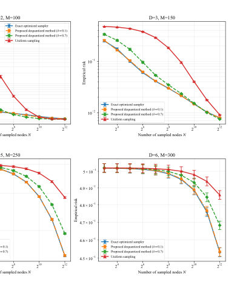

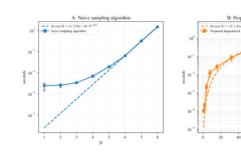
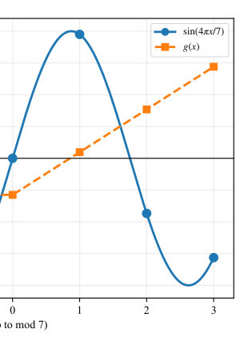
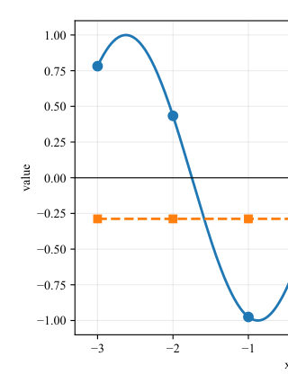
← Index · ← Previous · Next →
Authors: Natsuto Isogai, Hayata Yamasaki, Sho Sonoda, Mio Murao
Type: both · Category: disordered systems and neural networks · PDF: https://arxiv.org/pdf/2605.13979v1
Analysis basis: full PDF text, analyzed in chunks




Summary. This paper presents a classical algorithm that performs a task previously thought to require quantum advantage: efficiently sampling optimal hidden nodes for sparse neural networks. By exploiting the mathematical structure of the ridgelet transform, the authors achieve polynomial scaling, providing a powerful classical alternative to quantum machine learning approaches for subnetwork selection.
Why it may be interesting. not directly relevant
Main problem. Efficiently identifying sparse, high-performing subnetworks (winning lottery tickets) within large neural networks by overcoming the exponential computational bottleneck of sampling from an optimized probability distribution.
Main result. The authors developed a 'dequantized' classical algorithm that achieves polynomial-time scaling in the data dimension D, effectively replacing a previously proposed quantum algorithm without exponential overhead.
Method. The method uses a randomized classical rejection sampling algorithm that exploits the isometry structure of the discrete ridgelet transform to avoid dense matrix inversion.
Model / system. A discretized single-hidden-layer neural network using a ridgelet-based architecture over a finite field Z_P^D, where the learning task is supervised regression.
Key observables. Empirical risk, runtime scaling with dimension D, and total variation distance between sampled and target distributions.
Important parameters / regimes. Data dimension D, number of training samples M, regularization parameter lambda, smoothing parameter Delta, and precision parameter P.
Assumptions / limitations. The efficiency relies on the specific ridgelet structure rather than general sparsity; it assumes parameters are polynomially bounded and uses a discretized domain.
Figures summary. Figure 1 compares empirical risk across different dimensions, showing the proposed method tracks exact sampling; Figure 2 demonstrates the reduction from exponential to polynomial runtime scaling.
Paper structure. The paper introduces the problem of sparse subnetwork selection, defines the ridgelet-based mathematical framework, presents the new classical dequantized algorithm and an improved quantum version, provides theoretical proofs for complexity and correctness, and concludes with numerical simulations validating the efficiency and performance.
Quantum machine learning (QML) aims to accelerate machine learning tasks by exploiting quantum computation. Previous work studied a QML algorithm for selecting sparse subnetworks from large shallow neural networks. Instead of directly solving an optimization problem over a large-scale network, this algorithm constructs a sparse subnetwork by sampling hidden nodes from an optimized probability distribution defined using the ridgelet transform. The quantum algorithm performs this sampling in time $O(D)$ in the data dimension $D$, whereas a naive classical implementation relies on handling exponentially many candidate nodes and hence takes $\exp[O(D)]$ time. In this work, we construct and analyze a quantum-inspired fully classical algorithm for the same sampling task. We show that our algorithm runs in time $O(\operatorname{poly}(D))$, thereby removing the exponential dependence on $D$ from the previous classical approach. Numerical simulations show that the proposed sampler achieves empirical risk comparable to exact sampling from the optimized distribution and substantially lower than sampling from the non-optimized uniform distribution, while also exhibiting exponentially improved runtime scaling compared with the conventional classical implementation. These successful dequantization results show that sparse subnetwork selection via optimized sampling can be achieved classically with polynomial data-dimension scaling on conventional computers without quantum hardware, providing an alternative to the existing quantum algorithm.
Papers from cond-mat.mtrl-sci, mes-hall, other, soft, supr-con. These archives are de-prioritized — they appear at the end regardless of relevance score.
Authors: Lukas Krelle, Lukas Husel, Kenji Watanabe, Takashi Taniguchi, Ismail Bilgin, Alexander Högele, Farsane Tabataba-Vakili
Type: experiment · Category: other · PDF: https://arxiv.org/pdf/2605.14767v1
Analysis basis: full PDF text, analyzed in chunks
Topic relevance: 🔥 quantum optics experiment 4/5 · Tavis-Cummings & cavity-many-emitter 3/5 · correlated cavity matter 2/5 · interference shaping light 2/5
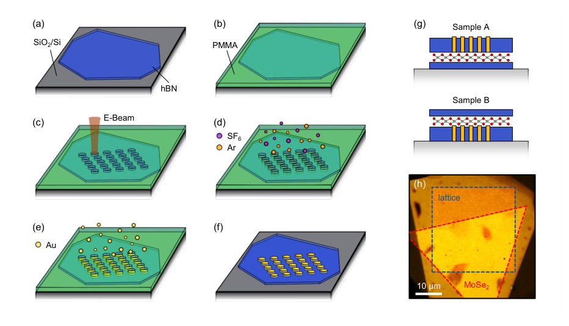
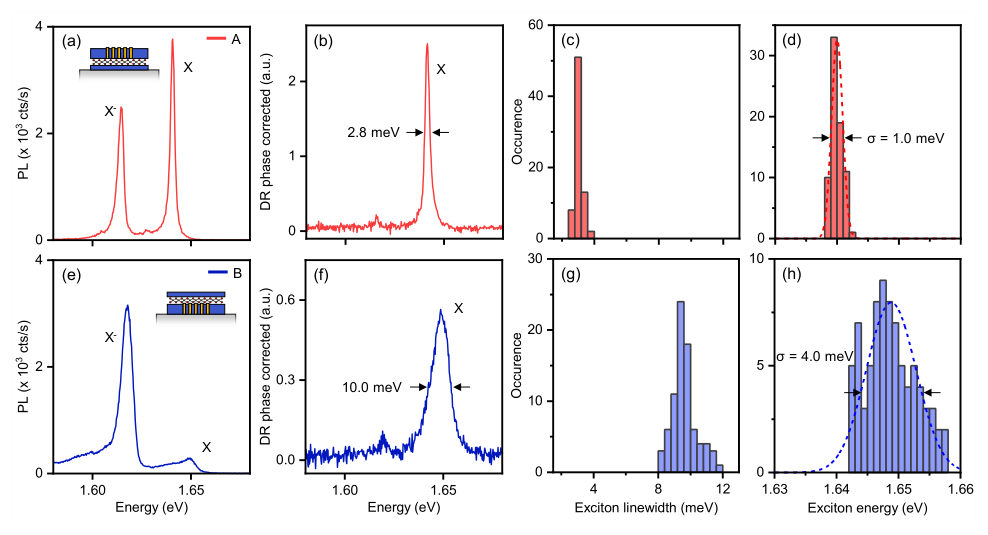
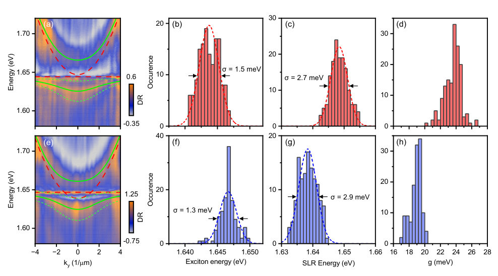
Summary. The study demonstrates that the spatial arrangement of plasmonic nanodisks relative to a 2D semiconductor layer is critical for maintaining high-quality excitons. By placing the lattice on top of the semiconductor, the researchers reduced strain and disorder, leading to a 25% increase in light-matter coupling strength. This approach enables the creation of more homogeneous and robust polaritonic platforms.
Why it may be interesting. This work is highly relevant to quantum optics and cavity QED as it demonstrates a practical method to maximize light-matter interaction strength and maintain high-quality resonances in hybrid plasmonic-semiconductor architectures.
Main problem. Optimizing the strength of light-matter coupling in plasmonic lattices integrated with monolayer semiconductors by addressing strain and dielectric disorder caused by fabrication processes.
Main result. Placing the plasmonic lattice on top of the semiconductor stack (Sample A) achieves a 25% increase in coupling strength and significantly improved exciton quality compared to a bottom-layer configuration.
Method. The researchers used electron-beam lithography, plasma etching, and gold evaporation to embed gold nanodisk arrays into hBN/MoSe2 heterostructures, followed by momentum-resolved differential reflectance and photoluminescence spectroscopy.
Model / system. The system consists of gold nanodisk arrays embedded in hexagonal Boron Nitride (hBN) layers coupled to MoSe2 monolayers, modeled using a coupled oscillator Hamiltonian to describe exciton-polariton formation.
Key observables. Exciton linewidth, exciton energy, spatial homogeneity (energy and linewidth), coupling strength (g), Rabi splitting, and Surface Lattice Resonance (SLR) Q-factors.
Important parameters / regimes. Exciton energy (~1.64 eV), coupling strength (23.5 meV in optimized sample), and exciton linewidth (3.0 meV in optimized sample).
Assumptions / limitations. The study assumes that the primary degradation in the control sample is due to fabrication-induced strain and surface contamination/doping.
Figures summary. Figure 1 shows the fabrication sequence and a schematic comparison of the two sample geometries (top-lattice vs. bottom-lattice).
Paper structure. The paper introduces the problem of light-matter coupling in 2D materials, describes the fabrication of two different layer-order heterostructures, presents spectroscopic characterization of exciton quality and coupling strength, and concludes with the implications for large-area polariton lattices.
Exciton-polaritons provide a versatile platform for the study of a wide range of phenomena, including polariton lasers, topological polaritons, and bosonic condensation. Transition metal dichalcogenide monolayers host excitons with large oscillator strength and binding energies constituting a robust matter constituent that forms polaritons from cryogenic to room temperature when embedded in optical microcavities. Plasmonic nanoparticles arranged in lattice geometries offer strong field-confinement and high quality factors. However, the high sensitivity of monolayer excitons to strain and dielectric disorder necessitates encapsulation in atomically flat hBN to ensure a high optical quality, rendering plasmonics more challenging. Here, we employ our recently developed fabrication method for embedding gold nanodisk arrays into van der Waals heterostructures and compare two samples with opposite layer order. We observe that strain and etching-induced surface contamination can reduce the exciton quality and thus the light-matter interaction strength significantly. Our fabrication approach reduces interfacial irregularities and enables homogeneous large-area polariton lattices for a wide range of applications, such as polarization-control or topological polaritonics.
Authors: Nidhin Prasannan, Konstantinos Mourzidis, Vishwas Jindal, Hanting Li, Di Lin, Wenchen Yang, Deng Hu, Liu Yang, Andrea Balocchi, Delphine Lagarde, Pierre Renucci, Zhiwei Wang, Gang Wang, Xavier Marie
Type: experiment · Category: quantum information and computing · PDF: https://arxiv.org/pdf/2605.14592v1
Analysis basis: full PDF text, analyzed in chunks
Topic relevance: 🔥 QC/QI experiment 4/5 · 🔥 quantum optics experiment 4/5
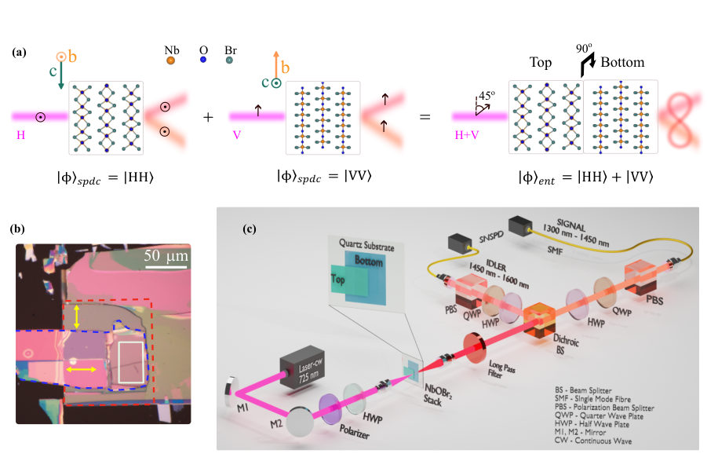
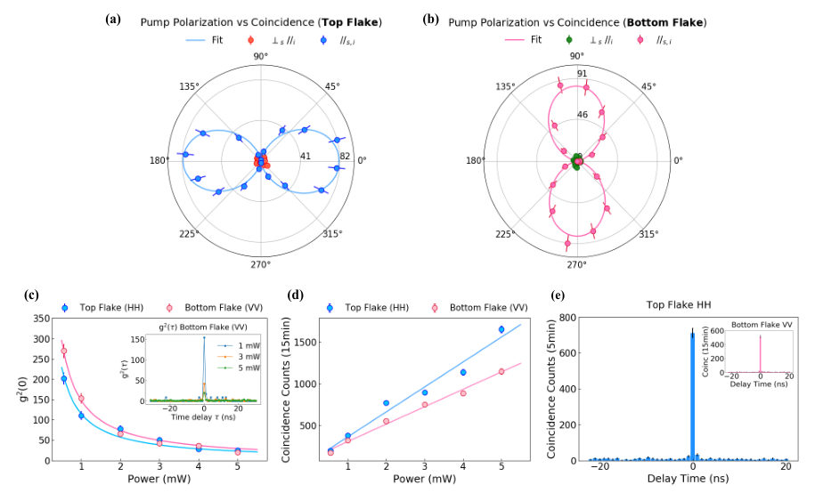
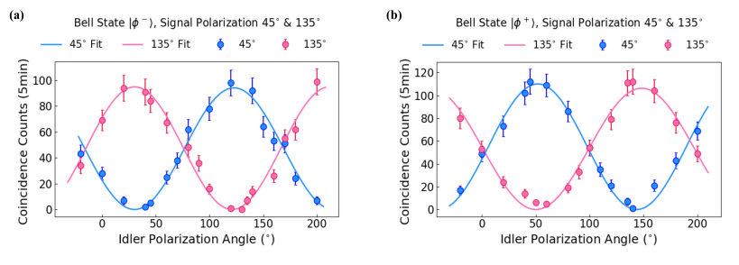
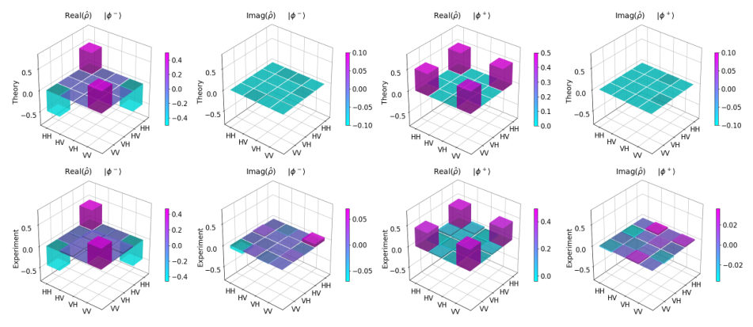
Summary. This paper reports the development of a high-brightness, tunable source of polarization-entangled photons at telecom wavelengths using twisted NbOBr2 van der Waals crystals. By using a 90-degree twisted stack, the researchers achieved entanglement fidelities over 95% and significantly higher brightness than previous 2D material-based sources. This provides a promising new platform for integrated quantum photonic communication networks.
Why it may be interesting. This work is highly relevant to quantum optics and quantum networks as it presents a new material platform for generating high-fidelity, high-brightness entangled photons at telecom wavelengths using van der Waals engineering.
Main problem. The need for scalable, high-brightness, and tunable telecom-wavelength entangled photon sources that are compatible with existing optical fiber infrastructure while overcoming the noise and brightness limitations of current 2D materials like TMDs.
Main result. The researchers demonstrated a high-brightness, tunable polarization-entangled photon source using twisted NbOBr2 crystals, achieving entanglement fidelities exceeding 95% and a brightness an order of magnitude higher than TMD-based sources.
Method. The team used spontaneous parametric down-conversion (SPDC) in a 90-degree twisted stack of NbOBr2 crystals, employing below-bandgap excitation and quantum state tomography to characterize the generated Bell states.
Model / system. The experimental platform consists of a 90-degree twisted stack of two mechanically exfoliated NbOBr2 van der Waals crystals (approximately 600 nm thick each) on a quartz substrate, utilizing the material's second-order nonlinearity (chi-2) for photon pair generation.
Key observables. Entanglement fidelity, coincidence-to-accidental ratio (CAR), entanglement visibility, photon bunching (g2(0)), and brightness (Hz/mW).
Important parameters / regimes. Pump wavelength of 725 nm, telecom-range photon generation (~1450 nm), 90-degree twist angle, and a 150 nm detection bandwidth.
Assumptions / limitations. The approach assumes that the 90-degree twist is precise enough to induce necessary quantum interference and that below-bandgap excitation effectively suppresses photocarrier-induced noise.
Figures summary. Figure 1 shows the NbOBr2 crystal structure, the 90-degree twisted stack setup, and the experimental configuration for SPDC; Figure 2 displays SPDC coincidence counts as a function of pump polarization.
Paper structure. The paper introduces the problem of telecom quantum light sources, describes the NbOBr2 material and twisted stacking platform, details the experimental setup for SPDC and characterization, presents the results for polarization selection rules and entanglement fidelity, and concludes with a comparison to existing 2D material technologies.
Nanoscale quantum light sources are essential building blocks for integrated quantum photonic systems. Here, we report a wavelength-scale entangled-photon source based on van der Waals-engineered NbOBr$_2$, and benchmark its performance for telecom-wavelength quantum light generation. By exploiting the material's second-order nonlinearity, we generate quantum-correlated photon pairs via spontaneous parametric down-conversion. We then use a 90$^{\circ}$ twisted stacking to induce quantum interference in photon-pair generation, yielding polarization-entangled photons. This approach enables tunability of the quantum optical state via control of the excitation laser polarization. We experimentally obtain entanglement fidelities exceeding 95% for Bell states, along with a high coincidence-to-accidental ratio of $\sim$335, and a brightness approximately one order of magnitude higher than recently reported telecom sources based on transition metal dichalcogenide (TMD) 2D materials. These results establish twisted van der Waals engineering as a powerful platform for highly tunable, high-brightness quantum light sources at telecom wavelengths.
Authors: Hyowon W. Jeong, Aris Koulas-Simos, Imad Limame, Markus Döblinger, Sang Kyu Kim, Chirag C. Palekar, Jonathan J. Finley, Stephan Reitzenstein, Gregor Koblmüller
Type: experiment · Category: quantum information and computing · PDF: https://arxiv.org/pdf/2605.13992v1
Analysis basis: full PDF text, analyzed in chunks
Topic relevance: 🔥 quantum optics experiment 4/5 · QC/QI experiment 3/5
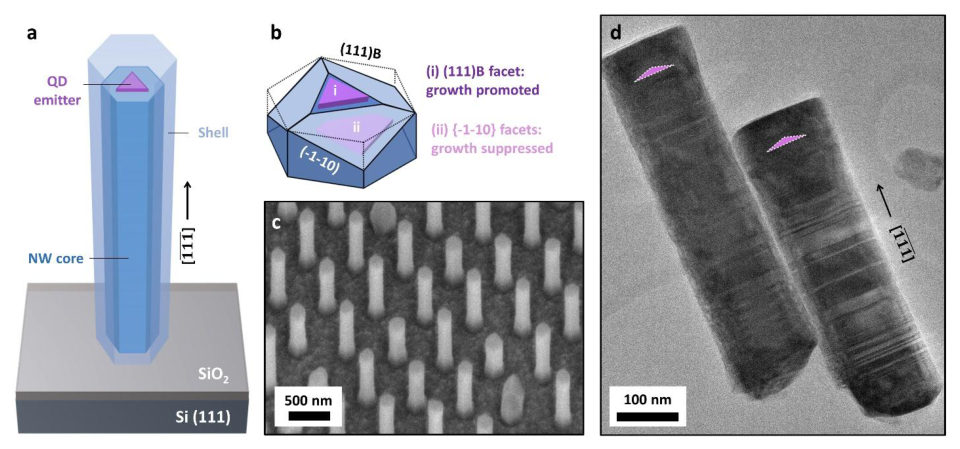

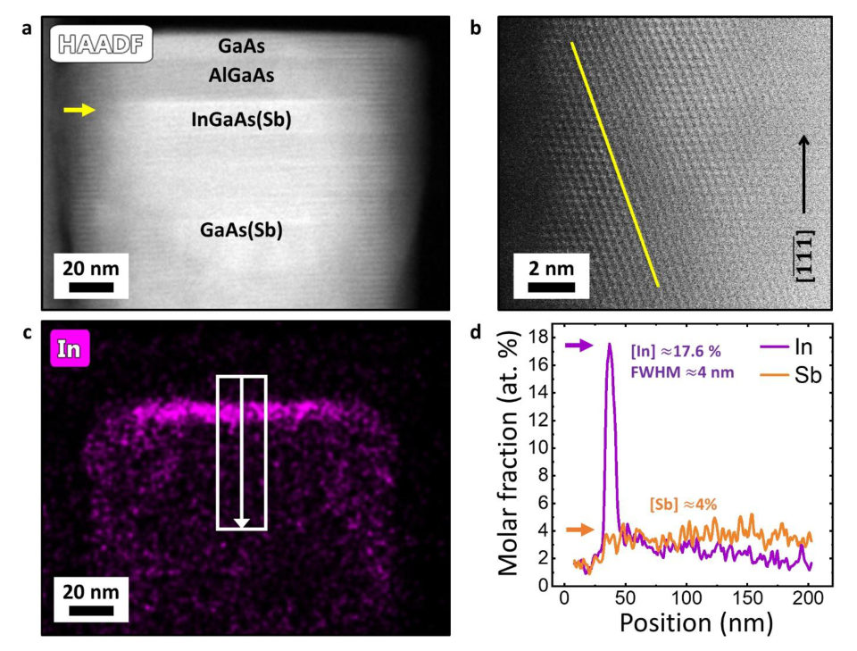
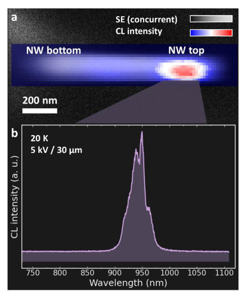
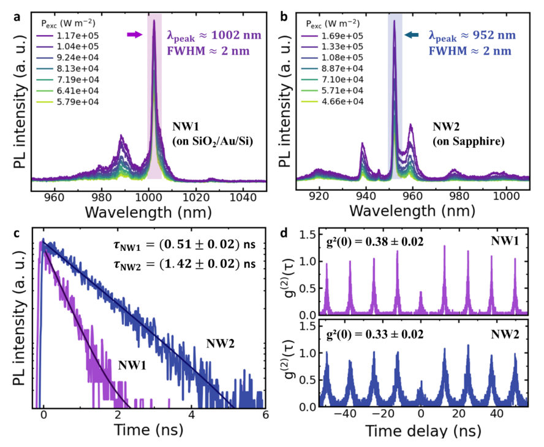
Summary. Researchers have developed a method to grow high-quality, ultrathin InGaAs quantum dots in GaAs nanowires by using Antimony as a surfactant to suppress structural defects. This technique enables the creation of reliable single-photon emitters suitable for integration into silicon-based quantum photonic circuits.
Why it may be interesting. This work provides a scalable material platform for single-photon sources, which are fundamental building blocks for photonic quantum computing and quantum networks.
Main problem. Achieving precise thickness control and abrupt interfaces for ultrathin axial InGaAs quantum dots in GaAs-based nanowires is hindered by facet-dependent growth dynamics and rotational twin defects.
Main result. The use of dilute Antimony (Sb) as a surfactant suppresses rotational twins and promotes axial growth on the (111)B facet, enabling high-quality single-photon emission with g2(0) < 0.4.
Method. Molecular Beam Epitaxy (MBE) using catalyst-free selective-area epitaxy, combined with structural analysis (STEM, EDXS) and optical characterization (micro-PL, TRPL, and HBT interferometry).
Model / system. Monolithic axial InGaAs(Sb) quantum dot emitters embedded within GaAs-based nanowires grown on Si(111) substrates.
Key observables. Second-order photon correlation g2(0), radiative lifetimes, emission wavelength, twin density, and elemental distribution.
Important parameters / regimes. Sb incorporation of 3-4%, radiative lifetimes as short as 0.51 ns, and twin density reduction from 1.5 nm^-1 to 0.5 nm^-1.
Assumptions / limitations. The use of a rectangular quantum box model with an infinite potential well and effective-mass approximation to estimate the confined bandgap.
Figures summary. Fig 1: Schematic of the QD in a nanowire and the growth concept via Sb-mediated facet engineering. Fig 2: STEM and EDXS analysis showing twin-free structure and In/Sb distribution. Fig 3: CL intensity maps and spectra showing localized emission. Fig 4: Photon statistics and correlation measurements.
Paper structure. The paper introduces the growth challenge, describes the Sb-mediated engineering approach, presents structural verification via microscopy, demonstrates optical single-photon performance, and discusses the implications for scalable quantum photonics.
GaAs-based nanowires hosting active quantum heterostructures provide a promising route toward monolithic integration of single-photon sources on silicon, a key requirement for scalable quantum photonics. However, ultrathin axial quantum-emitter formation is often hindered by facet-dependent growth dynamics and rotational twins, which induce lateral overgrowth and compromise interface abruptness. Here, we develop InGaAs-based quantum emitters by tailoring facet evolution via dilute Sb incorporation, which efficiently suppresses twins and promotes confined axial insertion at the growth-front facet. This approach significantly enhances the probability of obtaining abrupt, few-nanometer-thin quantum dots at the nanowire tip. Single-nanowire optical spectroscopy reveals intense, spatially localized emission from the active region with lifetimes as short as (0.51 $\pm$ 0.02) ns, and second-order photon-correlation measurements consistently exhibit pronounced antibunching with $g^{(2)}(0)<0.4$, confirming single-photon emission. These results establish a strong correlation between twin density and axial heterostructure formation, identifying defect control as a key factor in realizing monolithically integrated nanowire single-photon sources.
Authors: Kirill Kavokin
Type: theory · Category: other · PDF: https://arxiv.org/pdf/2605.14934v1
Analysis basis: full PDF text, analyzed in chunks
Topic relevance: non-equilibrium dynamics 3/5 · spintronics-quantum-optics interface 3/5 · quantum measurements 2/5
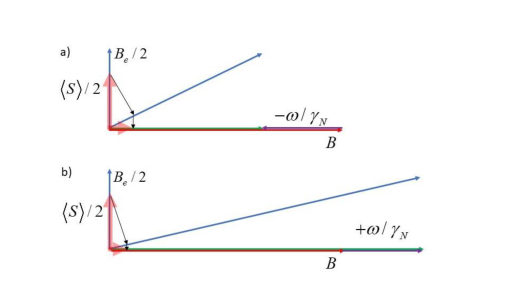
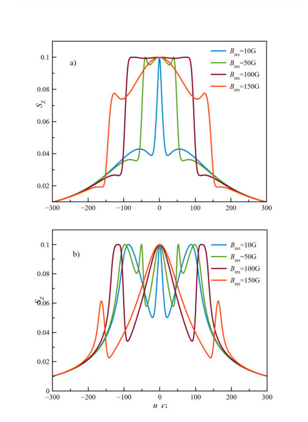
Summary. This paper theoretically explores how a strong, oscillating Knight field from photoexcited electrons can resonantly cool nuclear spins in semiconductors. It demonstrates that this cooling process creates an Overhauser field that alters the Hanle effect, providing a way to identify the sign of the carrier g-factor.
Why it may be interesting. The paper explores the non-equilibrium dynamics of spin systems under periodic driving and the back-action of a polarized reservoir (nuclear spins) on the driving species (electrons), which is relevant to open quantum systems and driven many-body dynamics.
Main problem. The paper investigates the theoretical description of resonant cooling of nuclear spins in semiconductors when the Knight field of photoexcited electrons is strong enough to exceed local nuclear dipole-dipole interaction fields.
Main result. It is shown that the resulting Overhauser field can significantly modify the shape of Hanle effect curves, and the specific shape of these curves can be used to determine the sign of the charge carrier g-factor.
Method. A modified rotating frame method is used to decompose the oscillating Knight field into two components, followed by solving a nonlinear balance equation between dynamic nuclear polarization and spin-lattice relaxation.
Model / system. The system consists of a semiconductor nuclear spin system interacting with spin-polarized charge carriers under illumination with helicity-modulated (alternating circular polarization) light.
Key observables. Hanle curves (magnetic depolarization of photoluminescence), Overhauser field (BN), and electron spin polarization.
Important parameters / regimes. External magnetic field (B), Knight field amplitude (Be) and frequency (omega), nuclear spin-lattice relaxation time (T1), and charge carrier g-factor.
Assumptions / limitations. The frequency of the Knight field modulation is assumed to be far from the frequency range of the nuclear spin correlator, and the Knight field is assumed to be large compared to local nuclear fields.
Figures summary. Figure 1 shows a schematic of effective fields in two different rotating frames; Figure 2 displays numerical examples of Hanle curves at different modulation frequencies demonstrating different shapes for positive vs. negative g-factors.
Paper structure. The paper introduces the problem of resonant cooling, describes the physical model and the rotating frame method, presents the mathematical framework for calculating DNP rates, provides numerical results for Hanle curves, and concludes with the implications for determining the g-factor.
Resonant cooling of the nuclear spin system of a semiconductor by spin-polarized charge carriers under pumping with helicity-modulated polarized light is considered theoretically. It is shown that in the case of strong Knight field of charge carriers, exceeding local fields of the dipole-dipole interaction of nuclear spins, the Overhauser field arising as a result of resonant cooling can considerably modify the overall shape of magnetic-field dependences of charge carrier spin polarization, experimentally observed as the Hanle effect.
Authors: Grzegorz S. Żmija, Grzegorz Cios, Benedykt R. Jany
Type: experiment · Category: statistical mechanics · PDF: https://arxiv.org/pdf/2605.15101v1
Analysis basis: full PDF text, analyzed in chunks
Topic relevance: non-equilibrium dynamics 3/5 · driven-dissipative phase transition 2/5 · non-equilibrium universality 2/5
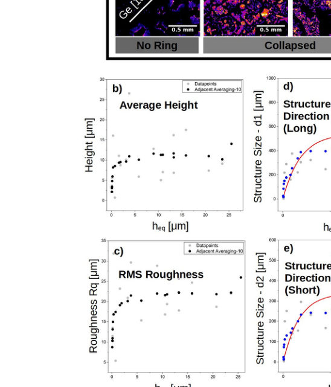
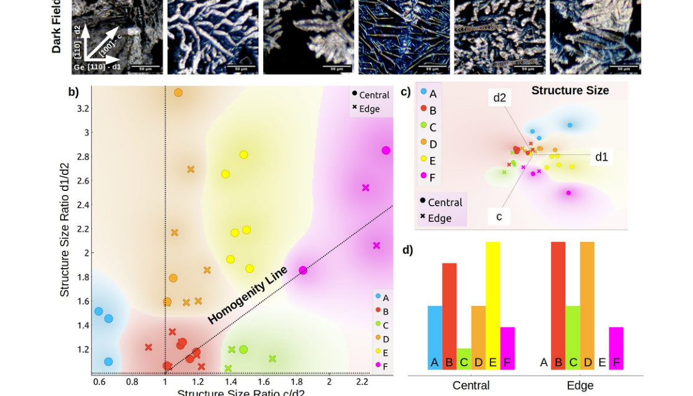
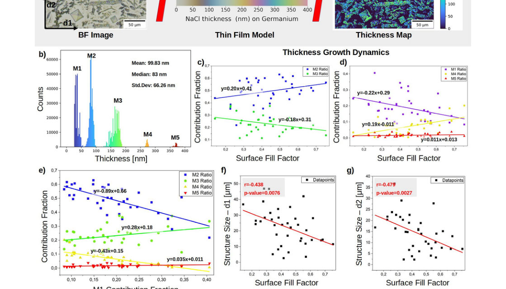
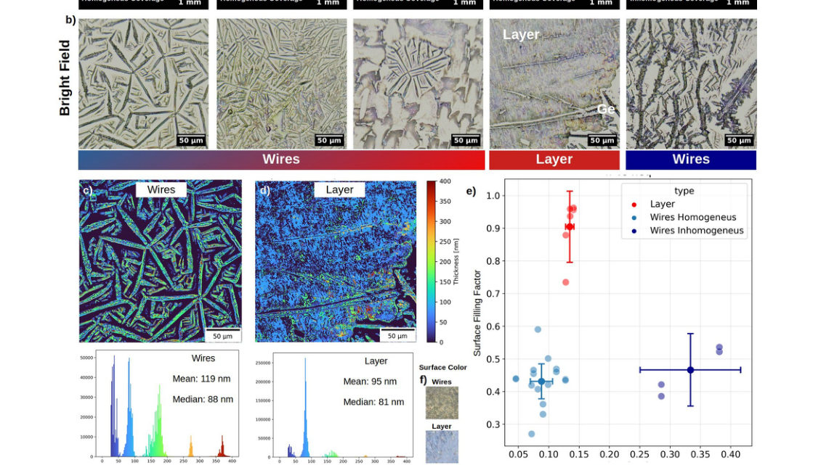
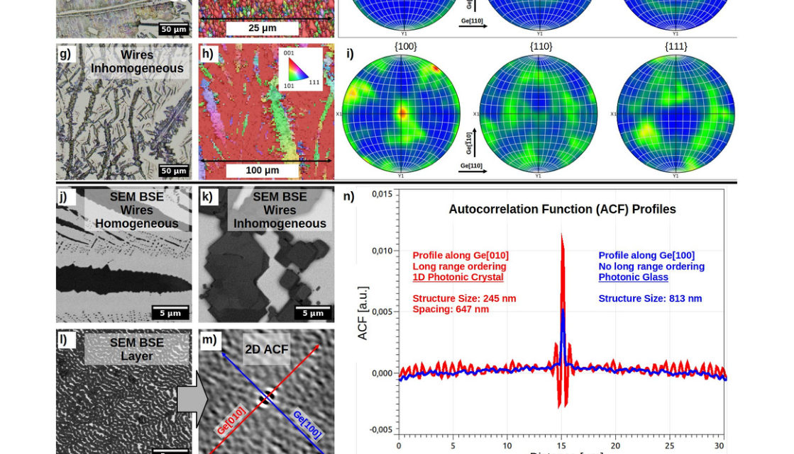
Summary. This paper investigates how the evaporation of salt droplets leads to the self-organization of complex crystalline structures on a semiconductor substrate. By analyzing transport-driven dynamics, the authors demonstrate how to control the formation of 1D photonic crystals and hybrid crystal-glass phases. The work provides a unified framework for predicting morphological evolution in evaporating systems.
Why it may be interesting. The paper explores non-equilibrium phase transitions, self-organization, and the decoupling of scales in a driven-dissipative system, which are central themes in non-equilibrium statistical mechanics.
Main problem. Understanding the mechanisms of crystallization dynamics and the emergence of ordered, functional phases during the evaporation of NaCl droplets on a Ge(001) substrate.
Main result. The study identifies that diffusion anisotropy, rather than growth kinetics, governs the maximal structure size and discovers a hybrid photonic phase with 1D crystal-like order and 2D glass-like disorder.
Method. Multi-scale investigation using light microscopy, SEM/EBSD, XRD, and quantitative thin-film interference analysis, supplemented by ARIMA and GARCH time-series modeling.
Model / system. The physical system consists of aqueous NaCl droplets evaporating on a Germanium (001) substrate, where growth is driven by the competition between Marangoni effects and capillary flow.
Key observables. NaCl equivalent height (h_eq), structural anisotropy (d1, d2), thickness peaks (M1-M5), surface filling factor, and crystallization front dynamics.
Important parameters / regimes. NaCl concentration (rho), droplet volume, evaporation rate, and the 'homogeneity line' where transport forces balance.
Assumptions / limitations. The crystallization process can be modeled as a reverse time series of height profiles; the use of an effective inverted Lambert-Beer model for thickness estimation.
Figures summary. Height maps showing morphology evolution; 2D autocorrelation functions for structure size; interference analysis schematics; thickness distribution histograms; and time-series plots (ARIMA/GARCH) of the crystallization front.
Paper structure. Introduction to crystallization dynamics; experimental setup of NaCl on Ge(001); morphological classification via h_eq; analysis of thickness layers via interference; investigation of structural anisotropy and epitaxial growth; time-series analysis of the crystallization front; and discussion of photonic applications.
Crystallization during droplet evaporation gives rise to complex, self-organized structures, yet the mechanisms underlying the emergence of ordered functional phases remain poorly understood. In this study, we present a comprehensive, multi-scale investigation into the crystallization dynamics of NaCl during droplet evaporation on a germanium (001) substrate, relevant for its IR applications. Through systematic microscopic characterization, we identify the formation of diverse microstructures, including 1D photonic crystal nanostructures formed within hybrid crystal-glass photonic system. To enable quantitative comparison across experimental conditions, we introduce the NaCl equivalent height as a unified metric to describe and classify the evolution of crystalline morphology. Our results reveal that diffusion anisotropy, rather than growth kinetics, primarily governs the maximal attainable structure size. Quantitative thin film interference analysis demonstrates the presence of discrete thickness layers in the film. Controlled evaporation experiments yield homogeneous crystallization patterns across the entire droplet area, facilitating the emergence of ordered photonic structures. Time-series dynamics analysis of height profiles uncovered the spatiotemporal evolution of the crystallization front, providing insights into the details of underlying physical mechanisms. Together, these results establish a robust experimental framework for understanding and predicting crystallization behavior in evaporating droplets, with potential applications in materials synthesis, photonics, and microscale pattern formation.
Authors: Niket Shah, Aymen Nomani, Kai Chen, Hridis Pal, Pavan Hosur
Type: theory · Category: other · PDF: https://arxiv.org/pdf/2605.14107v1
Analysis basis: full PDF text, analyzed in chunks
Topic relevance: Keldysh / 2PI / non-Gaussian methods 2/5 · spintronics-quantum-optics interface 2/5 · non-equilibrium dynamics 1/5
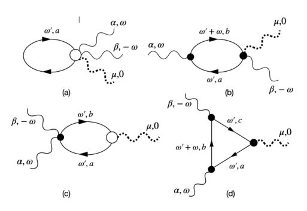
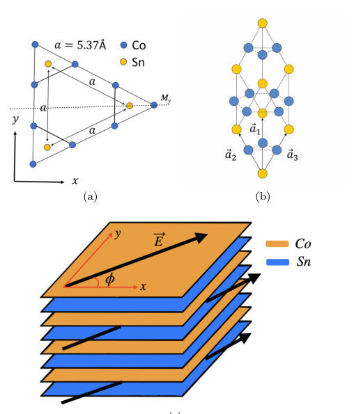
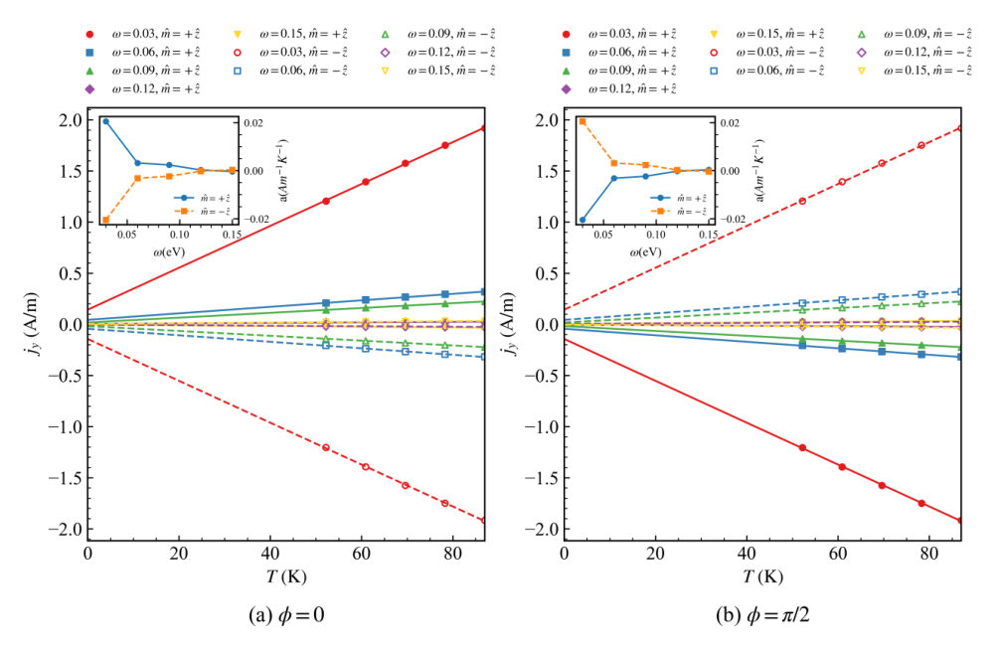
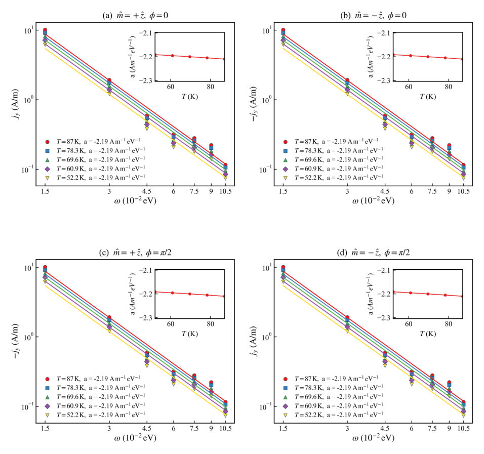
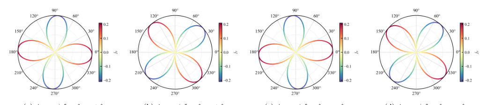
Summary. This paper theoretically demonstrates how the surface of the magnetic Weyl semimetal Co3Sn2S2 enables a switchable linear photogalvanic effect through magnetization control. The researchers show that the response is driven by surface Fermi arcs and follows a specific power-law frequency scaling. These findings suggest the material is a strong candidate for developing new magnetically controlled optoelectronic devices.
Why it may be interesting. not directly relevant
Main problem. Investigating the origin, symmetry constraints, and magnitude of the surface Linear Photogalvanic Effect (LPGE) in the magnetic Weyl semimetal Co3Sn2S2.
Main result. The study finds that the LPGE is localized to the surface due to broken inversion symmetry and that the extrinsic contribution is large due to enhanced density of states from Fermi arcs. It also identifies a power-law frequency scaling of |jy| proportional to omega^-2.2 and a magnetization-induced sign reversal.
Method. A Green's-function and diagrammatic formalism is used to evaluate the second-order response function via four Feynman diagrams.
Model / system. The system is the magnetic kagome Weyl semimetal Co3Sn2S2, modeled using a multi-orbital tight-binding Hamiltonian on a 40-layer slab to capture surface inversion symmetry breaking.
Key observables. Linear photogalvanic effect (LPGE) currents (jx, jy), Circular photogalvanic effect (CPGE) currents, and the second-order response tensor elements.
Important parameters / regimes. Magnetization direction (m), polarization angle (phi), frequency (omega), temperature (T), and scattering rate (delta).
Assumptions / limitations. The calculation assumes the response originates from the surface and uses an effective tight-binding Hamiltonian derived from previous literature.
Figures summary. Fig 1 shows Feynman diagrams for the second-order response; Fig 2b illustrates the rhombohedral lattice structure; Fig 5 shows polar plots of photocurrents as a function of polarization angle.
Paper structure. The paper introduces the problem of LPGE in Co3Sn2S2, details the tight-binding model and diagrammatic formalism, analyzes symmetry constraints on the response tensor, presents results regarding frequency and temperature dependence, and concludes with implications for optoelectronic applications.
We investigate the linear photogalvanic effect (LPGE) on the surface of the magnetic Weyl semimetal Co3Sn2S2 using a Green's-function and diagrammatic formalism. While the LPGE vanishes in the centrosymmetric bulk, it is symmetry-allowed on the surface where inversion symmetry is broken. We show that unitary crystal symmetries on the surface produce characteristic sign reversals of the total photocurrent at certain polarization angles upon flipping the magnetization. We further find that the intrinsic contribution to the LPGE is strongly constrained by an antiunitary mirror symmetry, which forces several nonlinear response tensor elements to vanish. In contrast, the extrinsic contribution is not subject to these constraints and displays a large magnitude which, we argue, is due to the enhanced density of states associated with Fermi-arc surface states. The current exhibits an approximately linear temperature dependence and a low-frequency power-law scaling, |jy| proportional to omega^-2.2, with weak temperature dependence of the scaling exponent. Our results identify Co3Sn2S2 as a promising platform for experimentally accessing symmetry-controlled nonlinear transport in realistic systems and for applications in magnetically controlled optoelectronic devices.
Authors: Christopher Sumner, Jakob Ziewer, Anju Sajan, Fumin Huang, Rohit Chikkaraddy
Type: experiment · Category: other · PDF: https://arxiv.org/pdf/2605.15123v1
Analysis basis: full PDF text, analyzed in chunks
Topic relevance: non-equilibrium dynamics 2/5 · quantum optics experiment 2/5
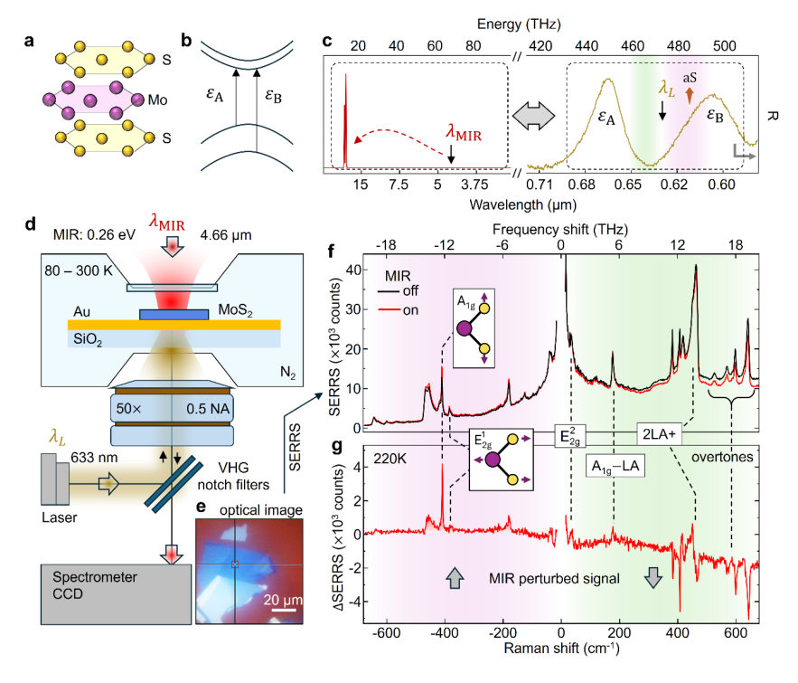
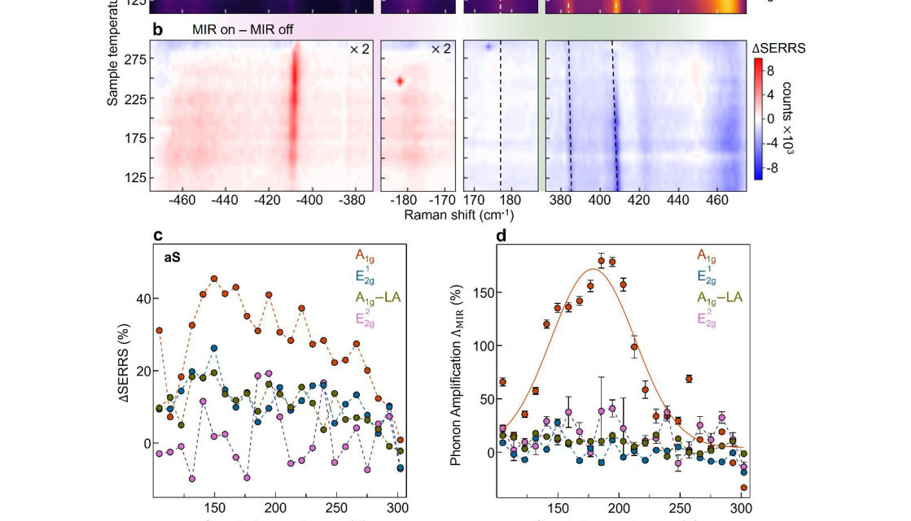
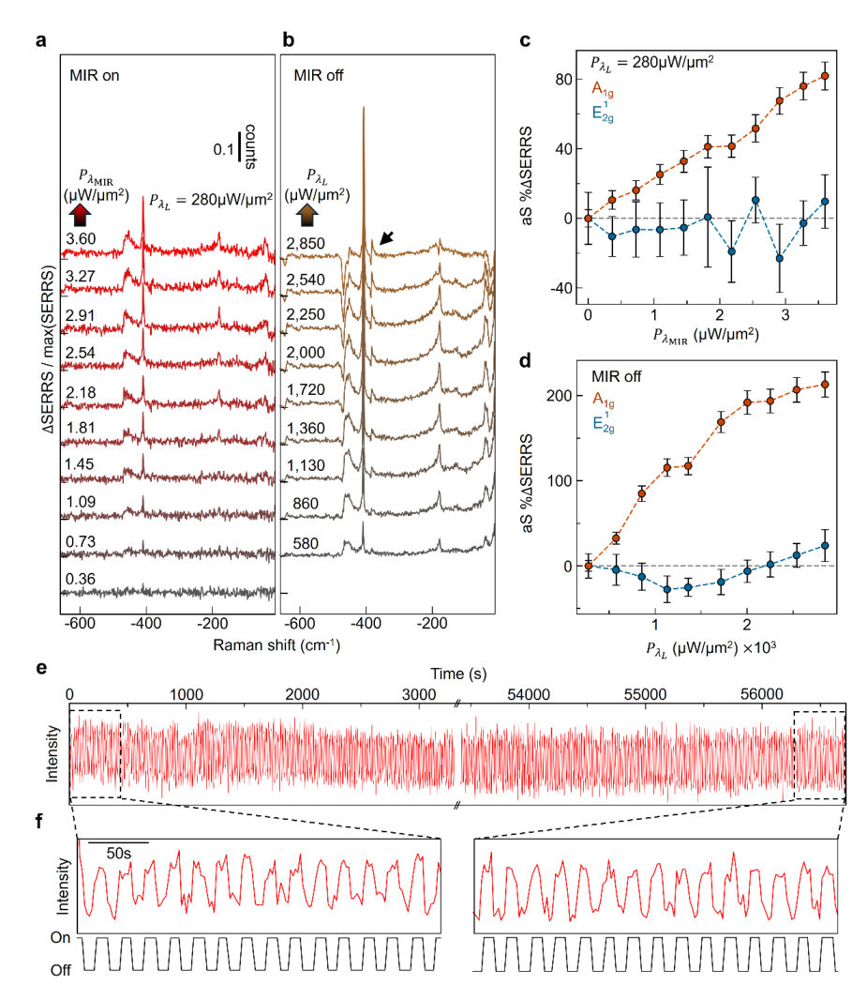
Summary. This paper introduces a method called MIRAPA to selectively amplify THz phonons in MoS2 using mid-infrared light. This approach is much more energy-efficient than using visible light and avoids the heating issues typically associated with optical phonon excitation. The technique enables highly sensitive mid-infrared detection and provides a platform for future phonon-based coherent devices.
Why it may be interesting. The paper demonstrates a highly efficient, non-thermal pathway for driving specific vibrational modes via exciton-mediated coupling, which is relevant to the study of driven-dissipative open quantum systems and optomechanics.
Main problem. Achieving efficient and selective excitation of lattice vibrations (phonons) in 2D semiconductors without the detrimental heating and decoherence caused by high-energy visible/NIR optical excitation.
Main result. Demonstrated mid-infrared assisted phonon amplification (MIRAPA) in MoS2, achieving over 80% amplification of the A1g phonon mode at room temperature with 300x lower power density than visible light.
Method. The researchers used surface-enhanced resonant Raman scattering (SERRS) to monitor phonon populations in few-layer MoS2 on a gold foil, using a mid-infrared pump to drive phonons and a visible laser as a probe.
Model / system. The experimental platform consists of few-layer MoS2 (approx. 5nm) exfoliated onto a 15nm thick gold (Au) foil, operating in a weak-coupling, anti-damping regime via exciton-mediated optomechanical coupling.
Key observables. Anti-Stokes/Stokes (aS/S) Raman intensity ratios, phonon occupation number (n), phonon linewidths (Gamma), and noise-equivalent power (NEP).
Important parameters / regimes. Room temperature operation, phonon amplification > 80%, effective NEP of ~0.3 nW/sqrt(Hz), and optomechanical coupling rate (hbar G) of 0.07-0.14 meV.
Assumptions / limitations. The analysis assumes the phonon population follows a Bose-Einstein distribution and utilizes a Lorentzian field-enhancement model for optomechanical coupling.
Figures summary. Figures show the dependence of A1g and E2g1 phonon intensities on MIR and visible power, the modulation of the anti-Stokes signal under periodic MIR switching, and the efficiency comparison between MIR and visible pumping.
Paper structure. The paper introduces the MIRAPA concept, describes the experimental setup (2DoF geometry), details the Raman spectroscopy methodology, presents results on selective phonon amplification and efficiency, demonstrates long-term stability and sensitivity, and concludes with potential applications.
Efficient and selective excitation of lattice vibrations is central to controlling energy flow at the nanoscale, yet remains challenging under conventional optical excitation. Here, we introduce a mid-infrared-assisted phonon amplification approach, termed MIRAPA, that enables efficient energy injection directly into vibrational bonds. Using surface-enhanced resonant Raman scattering in few-layer $\mathrm{MoS_2}$, we exploit strong exciton--phonon coupling to monitor phonon populations. When mid-infrared (MIR) light is introduced, it couples directly to out-of-plane lattice vibrations, leading to room-temperature phonon amplification exceeding $80\%$. Crucially, MIRAPA bypasses electronic excitation pathways, allowing the MIR power density to be nearly $300\times$ lower than that required for visible excitation to achieve comparable enhancement. The resulting phonon modulation is robust, persisting over more than $2800$ on/off cycles and exceeding $15$ hours of continuous-wave laser illumination without degradation. Quantitative analysis yields an effective noise-equivalent power of approximately $0.3\,\mathrm{nW}/\sqrt{\mathrm{Hz}}$ for MIR detection, highlighting the sensitivity of the approach. By combining vibrational selectivity, low-power operation, and long-term stability, MIRAPA provides a robust platform for probing and amplifying phonons in two-dimensional semiconductors. These results open new opportunities for nanoscale vibrational sensing, mid-infrared detection, and phonon-based coherent devices, including routes toward phonon lasing.
Authors: Zhoujian Sun, Yiyuan Chen, Tao Yu, Hai-Zhou Lu, X. C. Xie
Type: theory · Category: strongly correlated electrons · PDF: https://arxiv.org/pdf/2605.14735v1
Analysis basis: full PDF text, analyzed in chunks
Topic relevance: spintronics-quantum-optics interface 2/5
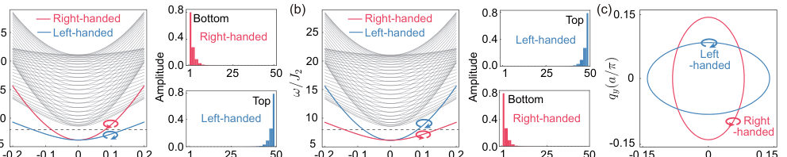
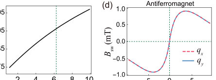
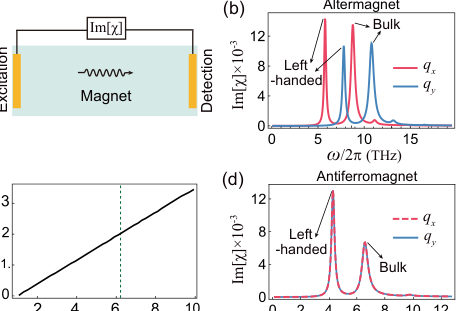
Summary. The paper identifies a unique signature of A-type altermagnets through the discovery of anisotropic surface spin waves. These waves exhibit properties like chirality-dependent surface localization and frequency splitting that are absent in conventional magnets. These features can be experimentally detected using NV center magnetometry and resonance absorption spectroscopy.
Why it may be interesting. not directly relevant
Main problem. Experimental identification of A-type altermagnets is difficult because they lack an anomalous Hall signal, necessitating a new unique signature for detection.
Main result. The discovery of anisotropic surface spin waves that exhibit chirality-dependent top-bottom localization and frequency splitting, providing a definitive signature for A-type altermagnetism.
Method. Linearization of the Landau-Lifshitz-Gilbert (LLG) equation around a collinear ground state and solving the resulting tridiagonal dynamical matrix eigenvalue problem.
Model / system. An N-layer square lattice of A-type altermagnets with intralayer ferromagnetic and interlayer antiferromagnetic exchange, characterized by broken PT symmetry due to unequal intralayer couplings (J1 != J2).
Key observables. Chirality-dependent surface localization, chiral split constant frequency contours, magnetic stray fields, and resonance absorption spectra.
Important parameters / regimes. Broken PT symmetry condition (J1 != J2), intralayer exchange (J1, J2), interlayer exchange (J3), and easy-axis anisotropy (K).
Assumptions / limitations. Linearization of the LLG equation, assumption of plane-wave excitations in the x-y plane, and neglect of damping for the resonance absorption calculation.
Figures summary. Fig 1 shows PT symmetry breaking and anisotropic contours; Fig 2 displays spin wave dispersions, amplitude profiles, and elliptical frequency contours; Fig 3 illustrates the NV center setup and compares stray field magnitudes and scaling with the J1/J2 ratio.
Paper structure. The paper introduces the problem of A-type altermagnet identification, presents a theoretical model of anisotropic surface spin waves, details the symmetry-breaking mechanism, proposes experimental detection methods via NV centers and resonance spectroscopy, and discusses the scaling of these signatures.
Altermagnets have attracted intense interest because they have the advantages of both ferromagnets and antiferromagnets. However, their experimental identification remains challenging, in particular for the A-type altermagnets that account for a large group of material candidates. Here, we discover a kind of anisotropic surface spin waves in A-type altermagnets, which is absent in ferromagnets and conventional antiferromagnets. The anisotropic surface spin waves arise directly from the nature of altermagnets, i.e., the spin-opposite sublattices cannot be related by translation or inversion, which breaks the combined spatial-inversion and time-reversal symmetry, leading to the anisotropic surface spin waves with two properties, the chirality-dependent top-bottom positions and chiral split constant frequency contours. We further show that these two properties can be measured experimentally from the stray field and by resonance absorption spectrum, respectively. Our results provide a signature for detecting altermagnets and will inspire spin-based logic and information-storage devices.
Authors: Aurys Silinga, Keir Edgar, Stephen McVitie, Kayla Fallon, András Kovács, Rafal E. Dunin-Borkowski, Trevor P. Almeida
Type: experiment · Category: other · PDF: https://arxiv.org/pdf/2605.14673v1
Analysis basis: full PDF text, analyzed in chunks
Topic relevance: spintronics-quantum-optics interface 2/5
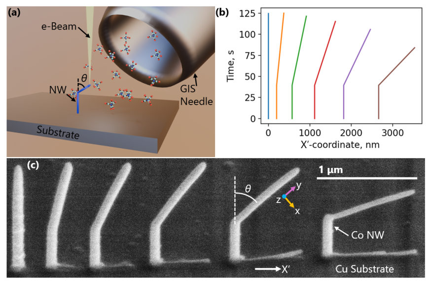
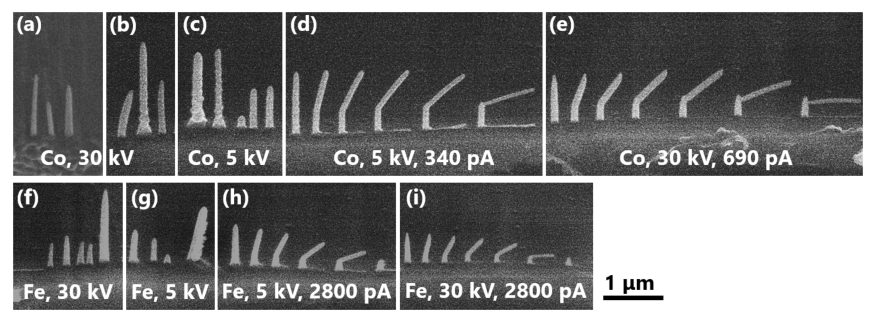
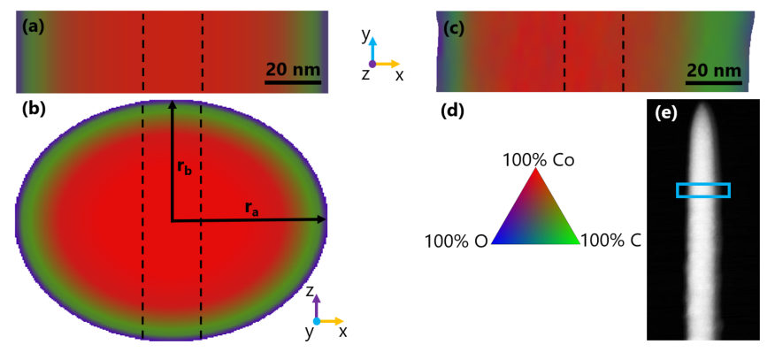
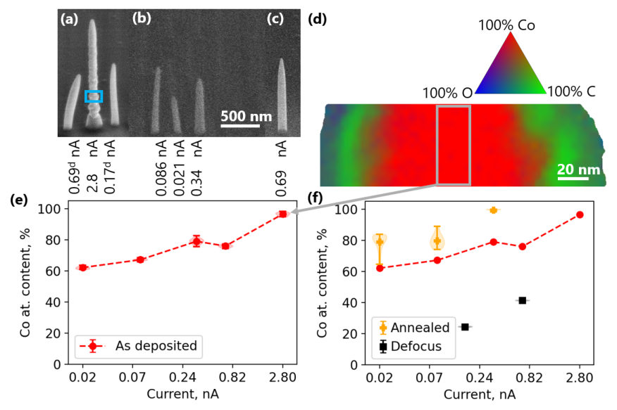
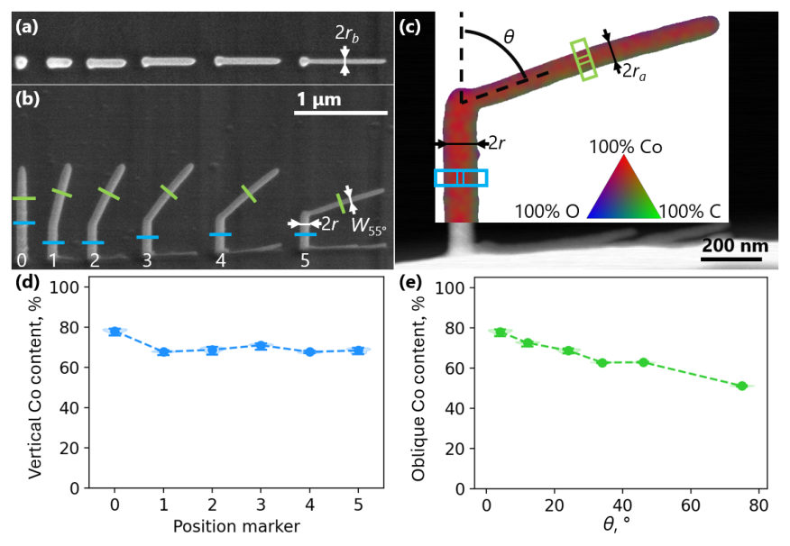
Summary. This paper investigates how the angle of growth in 3D-printed ferromagnetic nanowires affects their chemical purity and magnetic properties. It demonstrates that by optimizing electron beam voltage and current, researchers can maintain high metal content and structural symmetry even at oblique angles, which is crucial for designing complex spintronic devices.
Why it may be interesting. not directly relevant
Main problem. Quantifying how the growth angle and electron beam parameters affect the elemental composition, cross-sectional geometry, and magnetic induction of Co and Fe nanowires fabricated via FEBID.
Main result. Increasing the growth angle leads to a reduction in metal content and magnetic induction, but this can be mitigated by using low beam voltage (5 kV) and high beam current to confine the reaction volume.
Method. The study uses FEBID for fabrication, STEM-EELS for elemental mapping, and off-axis electron holography for magnetic induction reconstruction, supplemented by micromagnetic simulations.
Model / system. The physical system consists of 3D ferromagnetic Cobalt (Co) and Iron (Fe) nanowires with varying growth angles (0 to 90 degrees) relative to the electron beam axis, modeled as multi-layered elliptical cylinders.
Key observables. Metal atomic content (purity), magnetic induction (By), nanowire diameter, cross-sectional eccentricity, and growth angle.
Important parameters / regimes. Beam voltage (5 kV vs 30 kV), beam current, growth angle (theta), and beam translation speed.
Assumptions / limitations. Nanowires are approximated as uniform cylinders for qualitative magnetic evaluation; magnetic configurations are modeled using Mumax3 with specific exchange stiffness and saturation magnetization.
Figures summary. Figure 1 shows the FEBID process and beam path; Figure 2 displays SEM images of Co and Fe NWs; Figure 3 illustrates the multi-layered elliptical model; Figure 6 shows morphology and composition vs angle; Figure 7 shows micromagnetic simulations; Figures 8-10 show magnetic induction maps and correlations with metal content.
Paper structure. The paper introduces the FEBID fabrication challenge, describes the experimental setup and precursors, details the characterization techniques, presents results on composition and shape evolution vs growth angle, discusses optimization of beam parameters, and concludes with correlations between purity and magnetism.
Focused electron beam induced deposition (FEBID) is an additive manufacturing technique uniquely suited for fabricating nanoscale 3D prototypes for a range of applications, including spintronic devices. However, the variation of growth dynamics associated with electron beam translation and sample interaction volumes results in structures with non-uniform composition when fabricating intricate 3D geometries. Herein, we measure changes in atomic composition and corresponding changes in magnetic induction in 3D ferromagnetic nanostructures with overhanging elements, e.g. bridges or arches. To investigate the effects of electron beam translation, we fabricated 41 Co and Fe nanowire (NW) structures with growth angle relative to the optic axis varying from 0° to 90°. The (scanning) transmission electron microscopy techniques of electron energy loss spectroscopy and off-axis electron holography were performed to map the NW elemental composition and magnetic induction as a function of NW growth angle. Comparison of the results reveals a reduction in metal content with increased oblique growth angle in FEBID NWs. The magnitude of metal content reduction can be tuned by controlling electron beam parameters, and ferromagnetic NWs with approximately equal metal content at growth angles from 0° to 60° were fabricated by using the lowest viable electron beam voltage and the highest viable beam current to reduce the interaction volume and increase the metal content, respectively.
Authors: Seou Choi, Sachin Vaidya, Avner Shultzman, Charles Roques-Carmes, Ido Kaminer, Marin Soljačić
Type: both · Category: other · PDF: https://arxiv.org/pdf/2605.14992v1
Analysis basis: full PDF text, analyzed in chunks
Topic relevance: interference shaping light 2/5
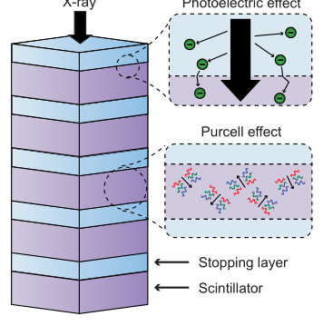
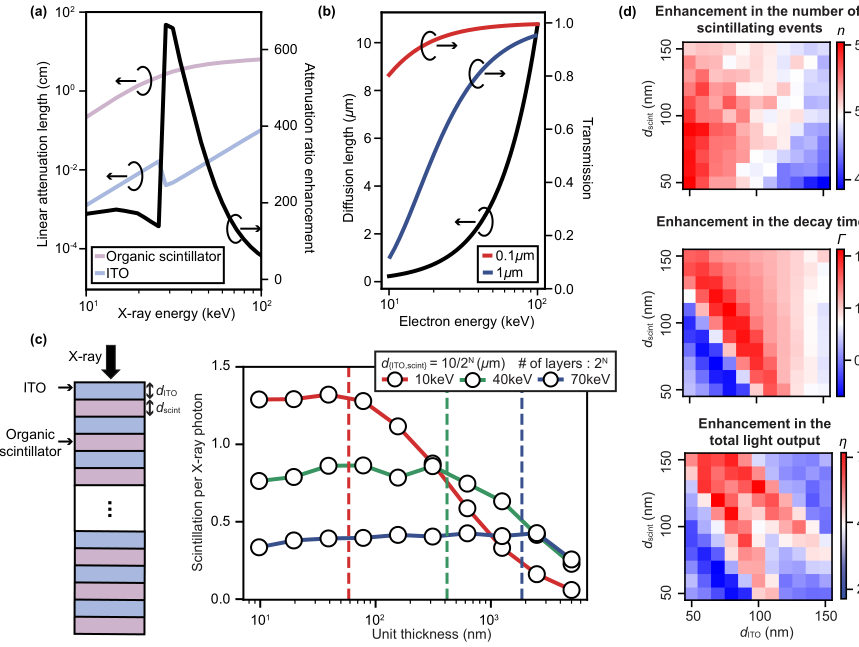
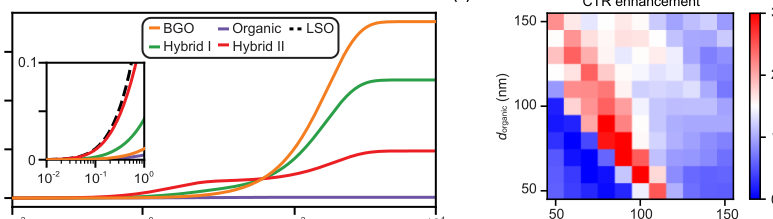
Summary. The researchers developed a hybrid nanophotonic scintillator that uses a 1D photonic crystal structure to simultaneously boost X-ray absorption and emission speed. By interleaving high-Z stopping layers with organic scintillators, they achieved massive increases in light yield and timing resolution. This approach could significantly advance the performance of medical imaging technologies like PET scans.
Why it may be interesting. The paper utilizes fundamental quantum optical phenomena, specifically the Purcell effect, to manipulate spontaneous emission rates and photon extraction in a structured dielectric environment.
Main problem. The challenge of simultaneously achieving high X-ray absorption (high light yield) and fast decay times (short emission) in scintillators, which are traditionally subject to a performance trade-off.
Main result. A 1D photonic crystal structure can enhance total detected light output by up to 700-fold and improve Coincidence Time Resolution (CTR) by up to 3.5 times compared to bulk materials.
Method. The study uses Geant4 Monte Carlo simulations for X-ray attenuation and electron transport, combined with numerical modeling of the Purcell effect and photon outcoupling efficiency.
Model / system. A 1D photonic crystal (PhC) scintillator consisting of periodically stacked layers of a fast-emitting organic scintillator and a high-Z, visible-light-transparent stopping layer (such as ITO or inorganic scintillators).
Key observables. Light output/yield, scintillation decay time, Coincidence Time Resolution (CTR), and X-ray attenuation length.
Important parameters / regimes. Subwavelength layer thickness (nanoscale), electron diffusion length, refractive index contrast, and effective atomic number (Zeff).
Assumptions / limitations. The model assumes photoelectrons can escape nanoscale stopping layers into adjacent scintillators and that visible light absorption in the stopping layer is negligible.
Figures summary. Fig 1 shows the schematic of the photoelectric-enhanced mechanism; Fig 2 compares X-ray attenuation and electron diffusion, showing enhancement metrics as a function of layer thickness; Fig 3 compares light output and CTR between the hybrid PhC and bulk LSO.
Paper structure. The paper introduces the problem of scintillator trade-offs, proposes a 1D PhC design, details the physical mechanisms (photoelectric effect and Purcell effect), presents numerical simulation results for both organic/ITO and inorganic/organic systems, and discusses fabrication and scaling.
Scintillators convert ionizing radiation into visible photons, enabling applications from cosmic ray detection to medical imaging. Two independent strategies for improving scintillator performance via nanoscale patterning have recently been demonstrated: engineering material properties to enhance absorption of ionizing radiation and integrating nanophotonic structures to enhance the spontaneous emission rate ("nanophotonic scintillators"). Here, we propose a nanophotonic scintillator that simultaneously enhances both the initial energy conversion and the spontaneous emission rate, by periodically stacking a fast-emitting scintillator and a visible-light-transparent material with strong X-ray attenuation ("stopping layer") to form a one-dimensional (1D) photonic crystal (PhC) scintillator. Photoelectric absorption in the stopping layer increases the number of photoelectrons that deposit energy in neighboring scintillator layers and contribute to scintillation. At the same time, the spontaneous emission rate is enhanced by the nanophotonic structuring itself. We design a 1D PhC comprising an organic scintillator and indium tin oxide (ITO) as the stopping layer and numerically simulate the enhancement in scintillation yield and decay rate. The total detected light output is enhanced by up to a factor of 700 compared to a bulk organic scintillator of equal thickness. We further investigate a 1D PhC structure integrating inorganic and organic scintillators for time-of-flight positron emission tomography (TOF-PET): replacing the non-scintillating stopping layer with an inorganic scintillator further increases the light yield, and the coincidence time resolution (CTR) is enhanced up to 3.5 times compared to a bulk inorganic scintillator of equal thickness. Our work presents a unified approach to improve key scintillation parameters within a single nanophotonic structure.
Authors: N. Medvedev, M. Kopecky, J. Chalupsky, L. Juha
Type: both · Category: statistical mechanics · PDF: https://arxiv.org/pdf/2605.15140v1
Analysis basis: full PDF text, analyzed in chunks
Topic relevance: non-equilibrium dynamics 2/5
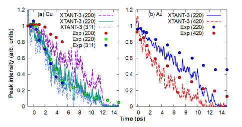
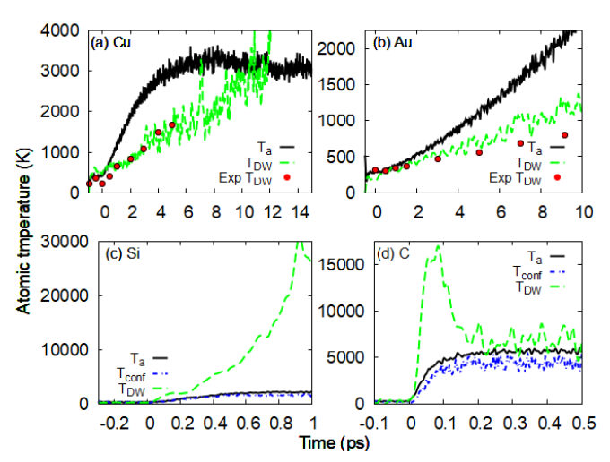
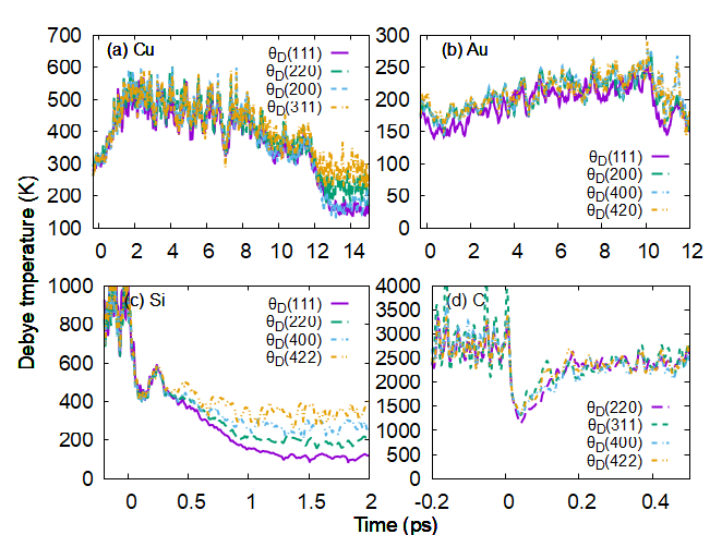
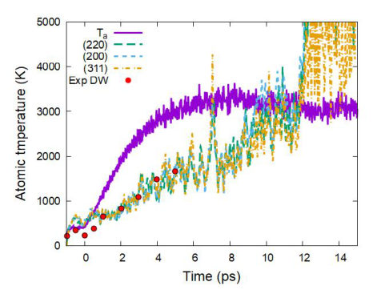
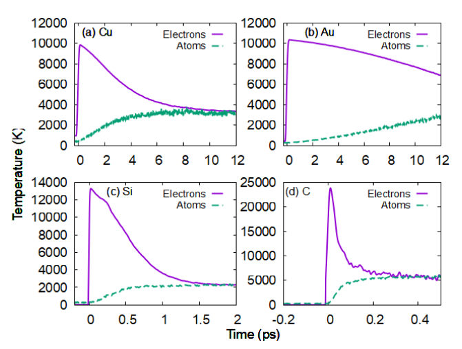
Summary. This paper demonstrates that using the standard Debye-Waller analysis to extract atomic temperatures from ultrafast diffraction data is unreliable because it neglects the dynamic evolution of the Debye temperature. This oversight leads to significant errors in temperature estimation, especially during non-equilibrium phase transitions. The work highlights the need for more sophisticated analysis that accounts for changes in the interatomic potential and phonon spectrum.
Why it may be interesting. not directly relevant
Main problem. The inaccuracy of extracting transient atomic temperatures from ultrafast diffraction data when the Debye temperature evolves due to electronic excitation.
Main result. Neglecting changes in the Debye temperature during electronic excitation leads to significant errors in the extracted atomic temperature, with errors being most extreme during nonthermal phase transitions in non-metals.
Method. Non-adiabatic molecular dynamics simulations using the XTANT-3 multiscale code, which combines Monte Carlo, Boltzmann collision integrals, and tight-binding-based molecular dynamics.
Model / system. The study examines metals (Cu, Au) and non-metals (Si, Diamond) under ultrafast laser irradiation, focusing on far-from-equilibrium, two-temperature regimes.
Key observables. Atomic kinetic temperature (Ta), Debye-Waller temperature (Tdw), configurational temperature (Tconf), Debye temperature (thetaD), and diffraction peak intensities.
Important parameters / regimes. Femtosecond to picosecond timescales, absorbed dose, photon wavelength, and electron-phonon coupling strength.
Assumptions / limitations. The standard Debye-Waller analysis assumes a constant Debye temperature, which the authors demonstrate is a flawed assumption under excitation.
Figures summary. Figure 1 compares simulated and experimental diffraction intensities; Figure 2 compares various temperature definitions across materials; Figure 3 shows the evolution of the Debye temperature; Figure 4 highlights the divergence between Tdw and Ta in Cu.
Paper structure. The paper introduces the problem of temperature extraction errors, validates the XTANT-3 simulation model against experimental data, demonstrates the evolution of the Debye temperature under excitation, and quantifies the resulting errors in temperature and electron-phonon coupling estimation.
Ultrafast diffraction is the cutting-edge technique to extract the atomic temperature at femtosecond timescales, and further related quantities - in particular, electron-phonon coupling strength at elevated electronic temperatures. The present work demonstrates limitations of such an analysis, emphasizing the importance of careful evaluation of the evolution of the Debye temperature. It is shown that, due to the sensitivity of the Debye-Waller analysis to this parameter, neglecting its changes under electronic excitation may lead to significant deviations of the atomic temperature extracted from its true values.
Authors: Zhibin Tan, Tao Wang, Hao Jin
Type: theory · Category: disordered systems and neural networks · PDF: https://arxiv.org/pdf/2605.14303v1
Analysis basis: full PDF text, analyzed in chunks
Topic relevance: spintronics-quantum-optics interface 2/5
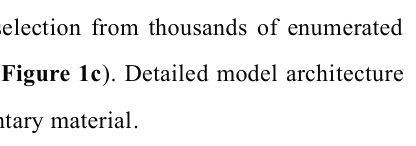
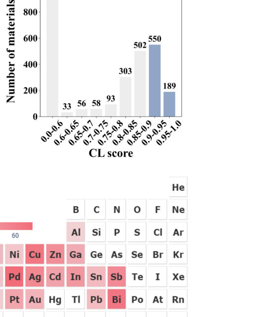
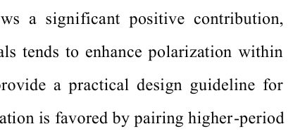
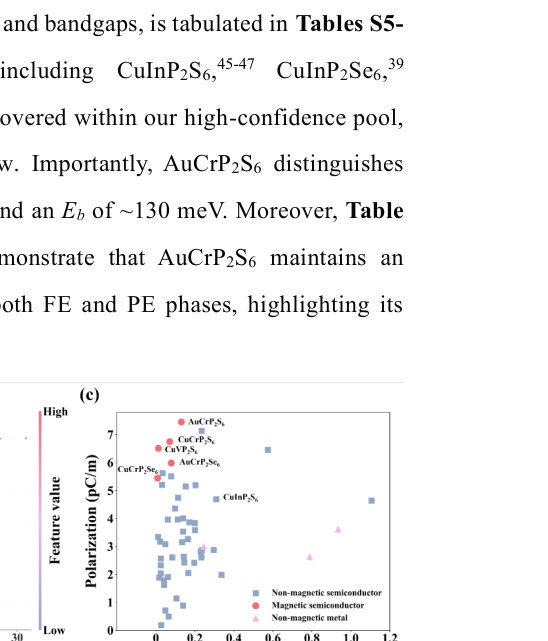
Summary. The researchers used machine learning to screen the 2D ABC2X6 material family and discovered AuCrP2S6, a promising multiferroic semiconductor. They propose using the bulk photovoltaic effect to non-destructively read four distinct logic states, providing a blueprint for next-generation high-density memory.
Why it may be interesting. not directly relevant
Main problem. The difficulty in identifying synthesizable 2D van der Waals multiferroics and the lack of non-destructive readout schemes for four-state nonvolatile memory.
Main result. Identification of AuCrP2S6 as a high-confidence multiferroic candidate that enables a four-state memory device via a non-destructive dual-channel readout using the bulk photovoltaic effect.
Method. A machine-learning workflow using Crystal Graph Convolutional Neural Networks (CGCNN) with a PU-bagging strategy, combined with first-principles DFT calculations and nonlinear optical theory.
Model / system. The 2D van der Waals ABC2X6 material family, specifically focusing on the AuCrP2S6 monolayer which exhibits simultaneous ferroelectric and ferromagnetic orders.
Key observables. Out-of-plane polarization (P), ferroelectric switching barrier (Eb), shift-current conductivity, and spin-polarized carrier transport.
Important parameters / regimes. Polarization of 7.46 pC/m, switching barrier of ~130 meV/f.u., and a bandgap of 1.06 eV.
Assumptions / limitations. The use of a 'positive-unlabeled' (PU) strategy assumes that unlabeled data can be effectively handled via semi-supervised ensemble learning.
Figures summary. Figure 3 shows SHAP analysis of chemical feature importance; Figure 4 displays the crystal structure, spin-polarized density of states, band structures, and energy profiles for the ferroelectric and paraelectric phases.
Paper structure. The paper introduces the problem of 2D multiferroic scarcity, describes an ML-based screening workflow (CGCNN and PU-bagging), validates the model, presents identified candidates, focuses on the AuCrP2S6 system, and proposes a device architecture for four-state memory.
Two-dimensional (2D) van der Waals (vdW) multiferroics offer an attractive platform for four-state nonvolatile memory by combining switchable ferroelectric polarization and magnetization within a single material system. However, their development is hindered by the scarcity of synthesizable candidates and the lack of non-destructive readout schemes. Here, we combine machine-learning screening with first-principles calculations to explore the 2D vdW ABC$_2$X$_6$ family and identify a set of high-confidence multiferroic candidates. Among them, AuCrP$_2$S$_6$ monolayer emerges as a representative system with a ferromagnetic ground state, a sizable out-of-plane polarization of 7.46 pC/m, and a moderate ferroelectric switching barrier of $\sim$130 meV/f.u. Moreover, the nonlinear optical response mediated by the bulk photovoltaic effect (BPVE) in AuCrP$_2$S$_6$ provides a dual-channel probe of the ferroic orders, in which the polarization direction governs the photocurrent sign while the magnetic order selects the spin channel via robust exchange splitting. This intrinsic coupling enables the non-destructive readout of four logic states within a single atomic layer, thereby providing a practical blueprint for next-generation multistate optoelectronic memory.
Authors: Ping-Chun Chen, Mashnoon Alam Sakib, Mariia Stepanova, Melika Momenzadeh, Maxim R. Shcherbakov
Type: experiment · Category: other · PDF: https://arxiv.org/pdf/2605.15065v1
Analysis basis: full PDF text, analyzed in chunks
Topic relevance: interference shaping light 2/5
Summary. This paper demonstrates a method to control the optical properties of silicon nitride nanostructures using extreme hydrostatic pressure. By applying up to 5 GPa, the researchers achieved significant tuning of resonance wavelengths and polarization states, providing a platform for reconfigurable photonics in extreme environments.
Why it may be interesting. not directly relevant
Main problem. The need for actively tunable nanophotonic platforms to enable reconfigurable optical systems and the challenge of achieving simultaneous pressure-induced control over multiple functionalities like resonance and polarization.
Main result. Demonstrated that hydrostatic pressure up to 5 GPa can induce a 30 nm blueshift in SiN resonances and a 4% refractive index decrease, enabling the first extreme-pressure-tunable, polarization-converting metasurface.
Method. High-pressure experiments using a Diamond Anvil Cell (DAC) with ruby fluorescence for pressure calibration, combined with FDTD simulations and Stokes parameter reconstruction for polarization analysis.
Model / system. Amorphous silicon nitride (SiN) nanostructures, specifically metal-coated Fabry-Perot resonators and a grating metasurface, subjected to hydrostatic pressure in a methanol:ethanol:water mixture.
Key observables. Transmittance spectra, resonance wavelength shift, refractive index modulation, polarization orientation angle (psi), and ellipticity (chi).
Important parameters / regimes. Pressure up to 5 GPa, refractive index change (dn/dP = -1.5e-2 GPa^-1), and resonance blueshift of up to 30 nm.
Assumptions / limitations. The pressure medium is assumed to maintain hydrostatic conditions; the resonance shift is assumed to be dominated by refractive index changes rather than thickness variations.
Figures summary. Fig 1: DAC setup and SiN FP resonator structure with simulation/experiment comparison. Fig 2: Pressure-dependent resonance blueshift and extracted refractive index decrease. Fig 3: Metasurface configuration, SEM images, and electric field simulations. Fig 4: Polarization state tunability (orientation and ellipticity).
Paper structure. Introduction to tunable photonics, experimental setup description (DAC and SiN structures), results for Fabry-Perot resonance tuning, results for metasurface polarization control, and discussion of the physical mechanism and applications.
Actively tunable nanophotonic platforms that control light-matter interactions enable reconfigurable optical systems and programmable photonic integrated circuits. Hydrostatic pressure provides a noninvasive and material-agnostic mechanism for modulating the refractive index and resonance conditions without introducing free carriers or structural damage. Here, we demonstrate multiple pressure-dependent functionalities in silicon nitride nanostructures, including resonance tuning, refractive index modulation, and polarization state conversion. Applying a pressure of up to 5 GPa, we observe a Fabry-Pérot resonance shift of up to 30 nm and a relative refractive index decrease of up to 4%. Based on the results, we design and examine, to the best of our knowledge, the first extreme-pressure-tunable, polarization-converting metasurface, which tunes the ellipticity and orientation angle of the output light. These findings establish pressure-controllable silicon nitride as a viable platform for reconfigurable photonics and extreme-environment nanophotonic systems, including deep-ocean exploration, planetary interiors, and space applications.
Authors: Hemant K Sharma
Type: theory · Category: disordered systems and neural networks · PDF: https://arxiv.org/pdf/2605.14639v1
Analysis basis: full PDF text, analyzed in chunks
Topic relevance: driven-dissipative phase transition 2/5
Summary. This paper explores how non-Hermiticity and spin-dependent hopping affect localization and topology in a quasiperiodic SSH chain. It reveals a unique re-entrant phase transition where the system moves from extended to localized and back to extended states. The study also shows that spin-dependent hopping can split spectral loops into distinct, spin-resolved topological branches.
Why it may be interesting. It explores the complex interplay of non-Hermiticity and spin-orbit coupling, providing insights into how non-Hermitian driving can induce re-entrant phase transitions and controllable spin-resolved topological phases.
Main problem. The study investigates the interplay between non-Hermiticity, quasiperiodicity, Rashba spin-orbit coupling, and spin-dependent hopping in determining localization and spectral topology.
Main result. The authors demonstrate a re-entrant transition from extended to localized and back to extended phases, which is accompanied by a simultaneous real-complex-real spectral transition and spin-resolved spectral splitting.
Method. The study uses exact diagonalization of the Hamiltonian to analyze the complex energy spectrum and localization properties.
Model / system. A non-Hermitian quasiperiodic Su-Schrieffer-Heeger (SSH) chain featuring Rashba spin-orbit coupling and spin-dependent hopping, modeled via a generalized Aubry-Andre-Harper lattice.
Key observables. Inverse Participation Ratio (IPR), Normalized Participation Ratio (NPR), spectral winding numbers (w), and the fraction of complex eigenvalues.
Important parameters / regimes. Non-Hermitian parameter (h), spin-dependent hopping strength (g_h), Rashba spin-orbit coupling (alpha), and quasiperiodic modulation strength (lambda).
Figures summary. Fig 1 shows IPR/NPR vs h demonstrating re-entrant localization; Fig 2 presents phase diagrams for localization (E, I, L) and spectral phases (R, M, C); Fig 4 shows the complex energy spectrum evolution and the splitting of spectral loops due to spin-dependent hopping.
Paper structure. The paper introduces the non-Hermitian SSH model, details the numerical methodology, presents the results regarding re-entrant localization and spectral transitions, analyzes the impact of spin-dependent hopping on topology, and concludes with potential experimental implementations.
We investigate localization and spectral topology in a non Hermitian quasiperiodic Su Schrieffer Heeger lattice with Rashba spin orbit coupling and spin-dependent hopping. By analyzing the inverse participation ratio, complex energy spectrum, and spectral winding numbers, we demonstrate the emergence of a re-entrant transition from extended to localized and back to extended phases as the non-Hermitian parameter increases. The localization transition is accompanied by a simultaneous real-complex-real spectral transition in the complex-energy plane. In the absence of spin dependent hopping, the spectrum forms two nearly spin-degenerate loops characterized by winding numbers w = 2. Upon introducing finite spin-dependent hopping, each loop splits into two independent spin-resolved spectral branches, resulting in four disconnected spectral contours carrying distinct winding sectors. Our results reveal a direct correspondence between localization, spectral topology, and spin-resolved spectral splitting in non-Hermitian quasiperiodic systems.
Authors: N. Medvedev, N. Nikishev, A. Artímez Peña
Type: theory · Category: statistical mechanics · PDF: https://arxiv.org/pdf/2605.14827v1
Analysis basis: full PDF text, analyzed in chunks
Topic relevance: non-equilibrium dynamics 2/5

Summary. This paper investigates how ultrafast laser irradiation can drive metal oxides into transient superionic states where only one atomic sublattice melts. It establishes that the crystal structure (sparse vs. dense) is a primary predictor of whether a material undergoes superionic transition or complete melting.
Why it may be interesting. not directly relevant
Main problem. Identifying which post-transition metal oxides produce transient superionic states (where one sublattice liquefies while the other remains solid) under ultrafast irradiation and understanding the mechanisms (nonthermal vs. thermal) driving these transitions.
Main result. The study finds that oxides with sparse metallic sublattices (corundum structure) generally form transient superionic states via nonthermal phase transitions, whereas closely packed lattices (zinc-blende) undergo nonthermal melting.
Method. Multiscale simulations using the XTANT-3 code, combining Transport Monte Carlo for electron dynamics, the Boltzmann Equation for electron scattering, and Molecular Dynamics for atomic motion.
Model / system. A variety of post-transition metal oxides (including Al2O3, Ga2O3, In2O3, ZnO, CdO, etc.) subjected to 92 eV photon energy pulses simulating FLASH free-electron laser irradiation.
Key observables. Element-resolved mean displacement (to distinguish superionicity from melting), damage threshold in eV/atom, and transition type (nonthermal vs. thermal).
Important parameters / regimes. Photon energy (92 eV), pulse duration (10 fs), electronic and atomic temperatures, and lattice structure (corundum vs. zinc-blende).
Assumptions / limitations. Uses a relaxation time approximation for electron-electron interaction and a transferable tight-binding method for interatomic potentials.
Figures summary. The notes mention Figure 1 shows mean atomic displacement, likely used to identify the superionic and melting regimes.
Paper structure. The paper introduces the problem of transient states, describes the XTANT-3 multiscale modeling framework, presents results categorized by crystal structure and transition mechanism, and concludes with a classification of different oxide behaviors.
Matter under irradiation may enter unusual transient states, outside of its equilibrium phase diagram. One of such states is a superionic-like state, in which one sublattice of a compound liquifies, whereas another one remains solid. Here, we study theoretically post-transition metal oxides under ultrafast excitation of its electronic system, identifying which compounds produce such a superionic state. It is shown that oxides with sufficiently sparce metallic sublattices (e.g. corundum structure) generally form transient superionic states via nonthermal phase transition. More closely packed lattices (such as the zinc-blend structure in ZnO and CdO) do not exhibit superionicity. Tl and Pb oxides only enter thermally-produced superionic states (induced by the atomic heating via electron-phonon coupling), but not nonthermal ones. Sn and Bi oxides demonstrate states that cannot be clearly classified, in which oxygen subsystem diffuses significantly more and faster than the metallic one, but the metallic one is not stable as it would be in a truly superionic state.
Authors: Giovanni Vignale, Junren Shi, Di Xiao, Qian Niu
Type: theory · Category: strongly correlated electrons · PDF: https://arxiv.org/pdf/2605.14336v1
Analysis basis: full PDF text, analyzed in chunks
Topic relevance: Keldysh / 2PI / non-Gaussian methods 2/5
Summary. This paper provides a rigorous theoretical proof that the modern theory of orbital magnetization is formally exact for interacting systems within Current Density Functional Theory. By deriving a new Ward identity, the authors show that the complex effects of electron-electron interactions are captured by using the self-consistent Kohn-Sham velocity. This confirms that researchers can reliably use KS eigenvalues and eigenfunctions to calculate magnetization in interacting solids.
Why it may be interesting. not directly relevant
Main problem. The paper seeks to rigorously derive and validate the orbital magnetization formula for periodic crystals within the framework of Current Density Functional Theory (CDFT), specifically addressing whether the 'modern theory' remains exact for interacting systems.
Main result. The authors prove that the orbital magnetization of an interacting solid can be computed exactly using the self-consistent Kohn-Sham eigenfunctions and eigenvalues, establishing a new Ward identity that connects the current vertex to the derivative of the self-energy.
Method. A diagrammatic approach using Green's functions and the Dyson series is employed to compute the linear response of the energy density to a periodic magnetic field in the long-wavelength limit.
Model / system. The system consists of interacting periodic crystals (solids) with broken time-reversal symmetry, described by the Kohn-Sham Hamiltonian in the CDFT framework.
Key observables. Orbital magnetization, paramagnetic current density, energy density fluctuations, and Berry curvature.
Important parameters / regimes. Long-wavelength limit (q to 0), zero and finite temperature, and the exchange-correlation vector potential.
Assumptions / limitations. The derivation assumes the 'parallel transport' gauge and utilizes the principle of nearsightedness to define energy density.
Figures summary. Figure 2 shows a bubble diagram for energy density response; Figure 3 displays a complete set of diagrams for the energy density response; Figure 4 illustrates the Dyson equation and contributions to the linearized self-energy insertion.
Paper structure. The paper reviews the non-interacting theory, identifies technical flaws in previous CDFT derivations, presents a rigorous proof using Ward identities and diagrammatic expansions, and extends the results to finite temperature.
We revisit the derivation of the orbital magnetization formula for periodic crystals in current density functional theory (CDFT)[1]. Our new derivation computes the linear response of the energy density to a periodic magnetic field in the long-wavelength limit. We unveil a Ward identity which connects the current vertex to the derivative of the Kohn-Sham self-energy. The result of Ref.[1] is confirmed: the orbital magnetization of the interacting solid can be computed exactly (in principle) from the self-consistent eigenfunctions and eigenvalues of the Kohn-Sham equation of CDFT.
Authors: Diego B. Fonseca, Anderson L. R. Barbosa, Luiz Felipe C. Pereira
Type: theory · Category: disordered systems and neural networks · PDF: https://arxiv.org/pdf/2605.14216v1
Analysis basis: full PDF text, analyzed in chunks
Topic relevance: entanglement & information structure 1/5 · non-equilibrium dynamics 1/5
Summary. This paper demonstrates that electronic interactions can be used to engineer transport in graphene nanoribbons by suppressing localization caused by quasiperiodic edge patterns. It reveals a unique three-regime transport behavior where weak interactions promote delocalization while strong interactions restore a localized state. This provides a potential mechanism for controlling conductance through edge engineering and interaction control.
Why it may be interesting. The paper explores the competition between structural disorder (quasiperiodicity) and many-body correlations, a fundamental theme in understanding how interactions can tune localization-delocalization transitions in low-dimensional systems.
Main problem. Investigating how the interplay between quasiperiodic edge geometry (Fibonacci-type extensions) and electron-electron interactions drives localization and delocalization in graphene nanoribbons.
Main result. The study identifies a transition from localized to delocalized to localized transport regimes as the Hubbard interaction strength increases, demonstrating that weak interactions can suppress geometric localization.
Method. Self-consistent mean-field Hubbard approximation combined with the Landauer-Büttiker formalism and Green's function-based numerical simulations using KWANT.
Model / system. Fibonacci edge-extended zigzag graphene nanoribbons (FEE-ZGNRs) modeled by a tight-binding Hamiltonian including first- and third-nearest-neighbor hopping and on-site Coulomb repulsion.
Key observables. Charge transmission coefficient (T), conductance, local density of states (LDOS), and multifractal characteristics (Generalized Hurst exponent and singularity spectrum).
Important parameters / regimes. Hubbard interaction strength (U), Fibonacci generation order (S1-S6), hopping amplitudes (t1, t3), and Fermi energy (E).
Assumptions / limitations. Use of a mean-field approximation for electron-electron interactions and a spin-symmetric reduction assuming equal spin densities; calculations are performed at zero temperature in the linear response regime.
Figures summary. Figure 1 shows the Fibonacci edge geometry; Figure 2 compares transmission for different hopping models; Figure 5 shows transmission decay vs. block number; Figure 7 displays LDOS spatial distribution; Figure 8 is a heat map of the transport transition; Figure 9 presents multifractal analysis.
Paper structure. The paper introduces the Fibonacci edge-extended GNR system, details the mean-field Hubbard model and transport formalism, presents results on transport regimes and the role of third-neighbor hopping, analyzes the microscopic localization mechanisms via LDOS, and concludes with a multifractal analysis of the transmission.
We investigate localization effects in zigzag graphene nanoribbons with quasiperiodic Fibonacci-type edge extensions, accounting for electron-electron interactions. We employ a tight-binding model that includes first- and third-nearest-neighbor hoppings, in which electronic interactions are treated within a self-consistent mean-field Hubbard approximation. Charge transport properties are calculated using the Landauer-Büttiker formalism. Our results reveal that the combination of quasiperiodic geometry and electronic interactions gives rise to nontrivial transport phenomena. Specifically, the system exhibits three transport regimes: in the non-interacting case, we observe geometric localization. For weak interactions, the system shows a conductive regime with transmission oscillations, whose multiplicity increases with the Fibonacci generation order. In this regime, delocalization emerges from the interplay between geometry and interaction-induced correlations. Finally, for strong interactions, repulsion dominates, and the system returns to a localized state. Our results demonstrate that quasiperiodic edge engineering, combined with electronic interaction control, offers a promising path to modulate transport in graphene nanoribbons.
Authors: M. A. Hidalgo
Type: theory · Category: strongly correlated electrons · PDF: https://arxiv.org/pdf/2605.15022v1
Analysis basis: full PDF text, analyzed in chunks
Topic relevance: Kondo & dissipative impurity 1/5
Summary. This paper proposes that the fractional quantum Hall effect hierarchy arises from geometric correlations between cyclotron orbits induced by impurities. This mechanism provides a new way to understand the emergence of fractional energy levels and the stability of specific filling factors. It suggests that impurity geometry is a fundamental organizing principle in quantum Hall systems.
Why it may be interesting. not directly relevant
Main problem. Investigating whether impurity-induced spatial correlations and geometric aspects can serve as an organizing principle for the formation of fractional quantum Hall states.
Main result. The author proposes a geometric mechanism where correlated impurities induce coherent coupling between cyclotron orbits, generating a fractional energy spectrum that reproduces the observed odd-denominator hierarchy and explains the absence of a 1/2 plateau.
Method. A phenomenological framework using the effective-mass approximation and symmetric gauge to derive an effective fractional energy spectrum from the interplay of guiding-center quantization and correlated cyclotron motion.
Model / system. A two-dimensional electron gas (2DEG) in a strong perpendicular magnetic field, subject to a potential from a correlated distribution of ionized impurities located at a finite distance from the 2DEG plane.
Key observables. Hall conductivity (sigma_xy) plateaux and longitudinal resistivity (rho_xx) minima.
Important parameters / regimes. Landau level index (n), fractional hierarchy parameters (p, q), dimensionless correlation parameter (eta), and impurity-2DEG separation (Delta).
Assumptions / limitations. Effective-mass approximation, symmetric gauge, nearest-neighbor approximation for impurity potential matrix elements, and the association of guiding-center radius with a geometric quantization scale.
Figures summary. Figure 1 shows a schematic of impurity-induced correlated cyclotron orbits; Figure 2 and 3 display predicted fractional plateaux in Hall magnetoconductivity and corresponding minima in longitudinal resistivity for the 1/3 and 1/5 families.
Paper structure. The paper introduces a geometric mechanism for FQH states, defines the physical model and Hamiltonian, derives the fractional energy spectrum through orbital correlations, compares the predicted hierarchy to experimental sequences, and discusses the stability of states based on impurity geometry.
We propose a geometric mechanism for fractional quantum Hall states based on impurity-induced correlations within a Landau level. A correlated distribution of ionized impurities partially modifies the Landau-level degeneracy through coherent coupling between cyclotron orbits, generating fractional energy sublevels. The odd-denominator hierarchy emerges naturally from the intrinsic guiding-center quantization and the correlated cyclotron motion. The resulting spectrum reproduces the principal experimentally observed fractional sequences and predicts a strong dependence of fractional-state stability on impurity geometry and layer separation. The absence of an incompressible Hall plateau at filling factor 1/2 follows from cancellation of the geometric correlations responsible for odd-denominator states. These results suggest that impurity-induced geometry may constitute an additional organizing principle in quantum Hall systems.
Authors: Diego B. Fonseca, Luiz Felipe C. Pereira, Anderson L. R. Barbosa
Type: theory · Category: disordered systems and neural networks · PDF: https://arxiv.org/pdf/2605.14214v1
Analysis basis: full PDF text, analyzed in chunks
Topic relevance: non-equilibrium dynamics 1/5
Summary. This paper demonstrates that electronic Levy glasses can significantly enhance the Spin Hall Effect by utilizing a superdiffusive transport regime. By engineering the disorder geometry in graphene nanoribbons, researchers can achieve much higher charge-to-spin conversion efficiency compared to standard diffusive systems.
Why it may be interesting. not directly relevant
Main problem. The study investigates how the transition from diffusive to superdiffusive transport regimes in electronic Levy glasses affects the efficiency of the Spin Hall Effect (SHE).
Main result. In the superdiffusive regime, the Spin Hall Angle (SHA) can reach up to 30-35%, significantly higher than the 5% observed in the diffusive regime, and can be further tuned via electrostatic potential.
Method. Numerical simulations using the Landauer-Büttiker approach and the Kwant software package, employing a tight-binding model with ensemble averaging over 10^3 configurations.
Model / system. Graphene nanoribbons (Armchair and Zigzag) acting as electronic Levy glasses, featuring randomly distributed circular regions of high Bychkov-Rashba spin-orbit coupling with a power-law distribution of radii.
Key observables. Longitudinal charge current (Ic), transverse spin Hall current (Isz), Spin Hall Angle (SHA), and Spin-polarized density of states (SDOS).
Important parameters / regimes. Fermi energy (E), spin-orbit coupling strength (lambda), on-site electrostatic potential (U), and the power-law exponent (beta).
Assumptions / limitations. The system is modeled using a tight-binding approximation with nearest-neighbor hopping and localized spin-orbit coupling clusters.
Figures summary. Figure 1 illustrates the device geometry and SOC clusters; Figure 2 shows transport properties as functions of Fermi energy; Figure 4 compares spin density of states in different regimes; Figure 5 demonstrates the effect of electrostatic potential on spin current and SHA.
Paper structure. The paper introduces the physical problem of spin-to-charge conversion, describes the electronic Levy glass model and tight-binding Hamiltonian, presents numerical results comparing diffusive and superdiffusive regimes, and concludes with the implications for disorder engineering in spintronics.
In spintronics, both electronic charge and spin are used to process and store information. Generation, manipulation, and detection of spin currents are essential for the development of next-generation spintronic technologies. Here, we investigate the spin Hall effect in electronic Lévy glasses composed of graphene ribbons with randomly distributed circular regions of high spin-orbit coupling. These systems exhibit two transport regimes that can be tuned by adjusting the Fermi energy. The superdiffusive regime is characterized by low Fermi energy, low resistivity, and low magnetoresistivity, resulting in a long spin diffusion length, in contrast to the diffusive regime. Employing the Landauer-Büttiker approach in conjunction with numerically exact tight-binding simulations, we compute spin-resolved transmission coefficients to assess the spin Hall current and the spin Hall angle as functions of Fermi energy, spin-orbit coupling strength, and on-site electrostatic potential. Our findings reveal that, in the superdiffusive regime, a low charge current can be converted into a large spin Hall current, whereas in the diffusive regime, the same charge current generates a modest spin Hall current. Moreover, we observe that the spin Hall angle can reach 30% in the superdiffusive regime, whereas in the diffusive regime it is only 5%. These results demonstrate that electronic Lévy glasses provide a versatile platform for controlling spin transport and optimizing the spin Hall effect for spintronic applications.